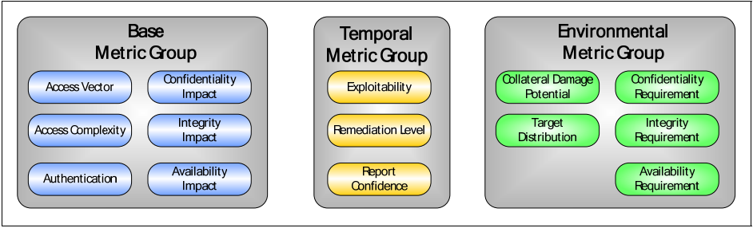

NIST IR 7435 日本語訳
英語タイトル : The Common Vulnerability Scoring System (CVSS) and its Applicability to Federal Agency Systems日本語タイトル : Common Vulnerability Scoring System（CVSS）と連邦機関のシステムへの適用性
公開日 : 2007-08-30
原文URL : https://csrc.nist.gov/pubs/ir/7435/final
原本 PDF : https://doi.org/10.6028/NIST.IR.7435
訳文 : 有志による非公式の日本語訳（AI による翻訳とレビュー）。全 296 段落のうち 289 段落を翻訳済み（原文取得日 : 2026-10-31）
[要約] NIST IR 7435 は、IT の脆弱性の特性と影響を伝えるオープンなフレームワークである Common Vulnerability Scoring System（CVSS）と、その連邦機関のシステムへの適用性を説明した報告書です。CVSS は、基本評価基準（Base）、現状評価基準（Temporal）、環境評価基準（Environmental）の 3 つのグループで構成され、各グループは 0.0 から 10.0 までの数値のスコアと、スコアの導出に使われた値を反映するベクターを生成します。本書は、各評価基準の定義とスコアの計算を示し、National Vulnerability Database（NVD）が公に知られている脆弱性に CVSS スコアを提供していることを述べています。連邦機関は、FIPS 199 のセキュリティカテゴリを NVD の CVSS スコアとともに使うことで、各機関の環境に合わせた影響スコアを得られるとされています。
［NIST のロゴ。公的な標章のため、この非公式サイトには掲載していません。原本 PDF を参照してください。］
NIST Interagency Report 7435
NIST 省庁間報告書 7435
The Common Vulnerability Scoring System (CVSS) and Its Applicability to Federal Agency Systems
Common Vulnerability Scoring System（CVSS）と連邦機関のシステムへの適用性
Peter Mell Karen Scarfone Sasha Romanosky
Peter Mell Karen Scarfone Sasha Romanosky
NIST Interagency Report 7435
NIST 省庁間報告書 7435
The Common Vulnerability Scoring System (CVSS) and Its Applicability to Federal Agency Systems
Common Vulnerability Scoring System（CVSS）と連邦機関のシステムへの適用性
Peter Mell Karen Scarfone Sasha Romanosky
Peter Mell Karen Scarfone Sasha Romanosky
COMPUTER SECURITY
コンピューターセキュリティ
Computer Security Division Information Technology Laboratory National Institute of Standards and Technology Gaithersburg, MD 20899-8930
コンピューターセキュリティ部門 情報技術研究所 米国国立標準技術研究所 Gaithersburg, MD 20899-8930
August 2007
2007 年 8 月
U.S. Department of Commerce
米国商務省
Carlos M. Gutierrez, Secretary
Carlos M. Gutierrez 長官
National Institute of Standards and Technology
米国国立標準技術研究所
William Jeffrey, Director
William Jeffrey、所長
Reports on Computer Systems Technology
コンピューターシステム技術に関する報告書
The Information Technology Laboratory (ITL) at the National Institute of Standards and Technology (NIST) promotes the U.S. economy and public welfare by providing technical leadership for the nation’s measurement and standards infrastructure. ITL develops tests, test methods, reference data, proof of concept implementations, and technical analysis to advance the development and productive use of information technology. ITL’s responsibilities include the development of technical, physical, administrative, and management standards and guidelines for the cost-effective security and privacy of sensitive unclassified information in Federal computer systems. This Interagency Report discusses ITL’s research, guidance, and outreach efforts in computer security and its collaborative activities with industry, government, and academic organizations.
米国国立標準技術研究所（NIST）の情報技術研究所（ITL）は、国の計測・標準インフラに技術面で主導的な役割を果たすことにより、米国経済と公共の福祉を促進しています。ITL は、情報技術の発展と生産的な利用を進めるため、テスト、テスト手法、参照データ、概念実証の実装、および技術的な分析を開発しています。ITL の責務には、連邦政府のコンピューターシステムにおける機密扱いでない機微な情報について、費用対効果の高いセキュリティとプライバシーを確保するための、技術面、物理面、行政面、および管理面の標準とガイドラインの策定が含まれます。この省庁間報告書は、コンピューターセキュリティにおける ITL の研究、ガイダンス、アウトリーチの取り組みと、産業界、政府、学術機関との共同活動について論じています。
National Institute of Standards and Technology Interagency Report 7435 33 pages (Aug. 2007)
米国国立標準技術研究所 省庁間報告書 7435 33 ページ（2007 年 8 月）
Certain commercial entities, equipment, or materials may be identified in this document in order to describe an experimental procedure or concept adequately. Such identification is not intended to imply recommendation or endorsement by the National Institute of Standards and Technology, nor is it intended to imply that the entities, materials, or equipment are necessarily the best available for the purpose.
本文書では、実験の手順や概念を適切に説明するために、特定の商業的な組織、機器、または資材を明示している場合があります。こうした明示は、米国国立標準技術研究所による推奨や支持を意味するものではなく、それらの組織、資材、または機器がその目的に利用できる最良のものであることを意味するものでもありません。
Acknowledgements
謝辞
The portions of this paper that define the CVSS standard were also published by the authors as the official CVSS standard1 with input from the Forum for Incident Response and Security Teams (FIRST) CVSS Special Interest Group members. The authors sincerely wish to recognize the contributions of all of the CVSS Special Interest Group members in development of the standard, including Barrie Brook, Seth Hanford, Stav Raviv, Gavin Reid, George Theall, and Tadashi Yamagishi as well as the authors of the CVSS v1.0 standard [1]. Thanks also go to Tim Grance and Stephen Quinn of the National Institute of Standards and Technology (NIST).
本論文のうち CVSS 標準を定義する部分は、Forum for Incident Response and Security Teams（FIRST）の CVSS Special Interest Group のメンバーの意見を得て、著者らにより公式の CVSS 標準1としても公表されました。著者らは、Barrie Brook、Seth Hanford、Stav Raviv、Gavin Reid、George Theall、Tadashi Yamagishi をはじめ、この標準の策定に貢献した CVSS Special Interest Group のすべてのメンバー、および CVSS v1.0 標準 [1] の著者に、心から謝意を表します。米国国立標準技術研究所（NIST）の Tim Grance と Stephen Quinn にも感謝します。
Abstract
概要
The Common Vulnerability Scoring System (CVSS) provides an open framework for communicating the characteristics and impacts of IT vulnerabilities. The National Vulnerability Database (NVD) provides specific CVSS scores for publicly known vulnerabilities. Federal agencies can use the Federal Information Processing Standards (FIPS) 199 security categories with the NVD CVSS scores to obtain impact scores that are tailored to each agency’s environment. CVSS consists of three groups: Base, Temporal and Environmental. Each group produces a numeric score ranging from 0.0 to 10.0, and a vector, a compressed textual representation that reflects the values used to derive the score. The Base group represents the intrinsic qualities of a vulnerability. The Temporal group reflects the characteristics of a vulnerability that change over time. The Environmental group represents the characteristics of a vulnerability that are unique to any user’s environment. CVSS enables IT managers, vulnerability bulletin providers, security vendors, application vendors and researchers to all benefit by adopting this common language of scoring IT vulnerabilities.
Common Vulnerability Scoring System（CVSS）は、IT の脆弱性の特性と影響を伝えるためのオープンなフレームワークを提供します。National Vulnerability Database（NVD）は、公に知られている脆弱性について、具体的な CVSS スコアを提供しています。連邦機関は、連邦情報処理標準（FIPS）199 のセキュリティカテゴリを NVD の CVSS スコアとともに使うことで、各機関の環境に合わせた影響スコアを得られます。CVSS は、基本評価基準、現状評価基準、環境評価基準（Base、Temporal、Environmental）の 3 つのグループで構成されます。各グループは、0.0 から 10.0 までの数値のスコアと、スコアの導出に使われた値を反映する、圧縮されたテキスト表現であるベクターを生成します。基本評価基準グループは、脆弱性の本質的な性質を表します。現状評価基準グループは、時間とともに変化する脆弱性の特性を反映します。環境評価基準グループは、各ユーザーの環境に固有の脆弱性の特性を表します。CVSS により、IT 管理者、脆弱性情報の提供者、セキュリティベンダー、アプリケーションベンダー、研究者は、IT の脆弱性をスコアリングするこの共通言語を採用することで、いずれも利益を得られます。
Authority
根拠法令
The National Institute of Standards and Technology (NIST) developed this document in furtherance of its statutory responsibilities under the Federal Information Security Management Act (FISMA) of 2002, Public Law 107-347.
米国国立標準技術研究所（NIST）は、2002 年連邦情報セキュリティマネジメント法（Federal Information Security Management Act、FISMA）、公法 107-347 に基づく法定責務を遂行するため、本文書を策定しました。
NIST is responsible for developing standards and guidelines, including minimum requirements, for providing adequate information security for all agency operations and assets; but such standards and guidelines shall not apply to national security systems. This guideline is consistent with the requirements of the Office of Management and Budget (OMB) Circular A-130, Section 8b(3), “Securing Agency Information Systems,” as analyzed in A-130, Appendix IV: Analysis of Key Sections. Supplemental information is provided in A-130, Appendix III.
NIST は、すべての連邦機関の業務と資産に十分な情報セキュリティを提供するための、最低要件を含む標準とガイドラインを策定する責任を負います。ただし、これらの標準とガイドラインは国家安全保障システムには適用されません。本ガイドラインは、A-130 付録 IV「主要な節の分析」で分析されているとおり、行政管理予算局（OMB）通達 A-130 第 8b(3) 節「連邦機関の情報システムの保護」の要件と整合しています。補足情報は A-130 付録 III に記載されています。
This guideline has been prepared for use by Federal agencies. It may be used by nongovernmental organizations on a voluntary basis and is not subject to copyright, though attribution is desired.
本ガイドラインは、連邦機関が使用するために作成されました。非政府組織が任意で使用してもよく、著作権の対象ではありませんが、出典を明示することが望まれます。
Nothing in this document should be taken to contradict standards and guidelines made mandatory and binding on Federal agencies by the Secretary of Commerce under statutory authority, nor should these guidelines be interpreted as altering or superseding the existing authorities of the Secretary of Commerce, Director of the OMB, or any other Federal official.
本文書のいかなる内容も、商務長官が法的権限に基づき連邦機関に対して義務的かつ拘束力のあるものとした標準とガイドラインに矛盾するものと解釈すべきではありません。また、本ガイドラインは、商務長官、OMB 長官、またはその他の連邦政府職員の既存の権限を変更したり、それに取って代わったりするものと解釈すべきではありません。
Table of Contents
目次
List of Figures
図の一覧
List of Tables
表の一覧
1. Introduction
1. はじめに
Currently, IT management must identify and assess vulnerabilities across many disparate hardware and software platforms. They need to prioritize these vulnerabilities and remediate those that pose the greatest risk. But when there are so many to fix, with each being scored using different scales [2][3][4], how can IT managers convert this mountain of vulnerability data into actionable information? The Common Vulnerability Scoring System (CVSS) is an open framework that addresses this issue. It offers the following benefits:
現在、IT 管理者は、数多くの異なるハードウェアおよびソフトウェアプラットフォームにわたって、脆弱性を識別し評価する必要があります。これらの脆弱性に優先順位を付け、最大のリスクをもたらすものを修復する必要があります。しかし、修正対象がこれほど多く、それぞれが異なる尺度でスコアリングされている [2][3][4] とき、IT 管理者は、この山のような脆弱性データをどのように実行可能な情報に変えればよいのでしょうか。Common Vulnerability Scoring System（CVSS）は、この問題に対処するオープンなフレームワークです。次の利点があります。
•Standardized Vulnerability Scores: When an organization normalizes vulnerability scores across all of its software and hardware platforms, it can leverage a single vulnerability management policy. This policy may be similar to a service level agreement (SLA) that states how quickly a particular vulnerability must be validated and remediated.
•標準化された脆弱性スコア: 組織が、すべてのソフトウェアとハードウェアのプラットフォームにわたって脆弱性スコアを正規化すると、単一の脆弱性管理ポリシーを活用できます。このポリシーは、特定の脆弱性をどのくらい迅速に検証し修正しなければならないかを定める、サービスレベルアグリーメント（SLA）に似たものとなる場合があります。
•Open Framework: Users can be confused when a vulnerability is assigned an arbitrary score. “Which properties gave it that score? How does it differ from the one released yesterday?” With CVSS, anyone can see the individual characteristics used to derive a score.
•オープンなフレームワーク: 脆弱性に恣意的なスコアが付けられると、ユーザーは混乱することがあります。「どの特性がそのスコアになったのか。昨日公表されたものとどう違うのか。」CVSS では、誰でも、スコアの導出に使われた個々の特性を確認できます。
•Prioritized Risk: When the environmental score is computed, the vulnerability now becomes contextual. That is, vulnerability scores are now representative of the actual risk to an organization. Users know how important a given vulnerability is in relation to other vulnerabilities.
•優先順位付けされたリスク: 環境スコアを計算すると、脆弱性は文脈を持つようになります。すなわち、脆弱性スコアが、組織にとっての実際のリスクを表すようになります。ユーザーは、ある脆弱性が他の脆弱性と比べてどれほど重要かを知ることができます。
1.1 What is CVSS?
1.1 CVSS とは
CVSS is composed of three metric groups: Base, Temporal, and Environmental, each consisting of a set of metrics, as shown in Figure 1.
CVSS は、図 1 に示すように、基本評価基準（Base）、現状評価基準（Temporal）、環境評価基準（Environmental）の 3 つの評価基準グループで構成され、それぞれが一連の評価基準を含みます。

Figure 1. CVSS Metric Groups
図 1. CVSS の評価基準グループ
These metric groups are described as follows:
これらの評価基準グループは、次のように説明されます。
•Base: represents the intrinsic and fundamental characteristics of a vulnerability that are constant over time and user environments. Base metrics are discussed in Section 2.1.
•基本評価基準（Base）: 時間やユーザーの環境を通じて一定である、脆弱性の本質的で基本的な特性を表します。基本評価基準は、第 2.1 節で説明します。
•Temporal: represents the characteristics of a vulnerability that change over time but not among user environments. Temporal metrics are discussed in Section 2.2.
•現状評価基準（Temporal）: 時間とともに変化しますが、ユーザーの環境の間では変化しない、脆弱性の特性を表します。現状評価基準は、第 2.2 節で説明します。
•Environmental: represents the characteristics of a vulnerability that are relevant and unique to a particular user’s environment. Environmental metrics are discussed in Section 2.3.
•環境評価基準（Environmental）: 特定のユーザーの環境に関連し、その環境に固有の、脆弱性の特性を表します。環境評価基準は、第 2.3 節で説明します。
The purpose of the CVSS base group is to define and communicate the fundamental characteristics of a vulnerability. This objective approach to characterizing vulnerabilities provides users with a clear and intuitive representation of a vulnerability and a common taxonomy for description. Users can then invoke the temporal and environmental groups to provide contextual information that more accurately reflects the risk to their unique environment. This allows them to make more informed decisions when trying to mitigate risks posed by the vulnerabilities.
CVSS の基本評価基準グループの目的は、脆弱性の基本的な特性を定義し、伝えることです。脆弱性の特性を示すこの客観的な手法により、ユーザーは、脆弱性の明確で直感的な表現と、説明のための共通の分類を得られます。その上でユーザーは、現状評価基準グループと環境評価基準グループを呼び出して、自らの固有の環境に対するリスクをより正確に反映する文脈情報を与えることができます。これにより、脆弱性がもたらすリスクを軽減しようとする際に、より情報に基づいた判断を下せます。
1.2 Other Vulnerability Scoring Systems
1.2 その他の脆弱性スコアリングシステム
There are a number of other vulnerability “scoring” systems managed by both commercial and non-commercial organizations. They each have their merits, but they differ by what they measure. For example, CERT/CC produces a numeric score ranging from 0 to 180 but considers such factors as whether the Internet infrastructure is at risk and what sort of preconditions are required to exploit the vulnerability [3]. The SANS vulnerability analysis scale considers whether the weakness is found in default configurations or client or server systems [4]. Microsoft’s proprietary scoring system tries to reflect the difficulty of exploitation and the overall impact of the vulnerability [2].2 While useful, these scoring systems provide a one-size-fits-all approach by assuming that the impact for a vulnerability is constant for every individual and organization.
商業組織と非商業組織の双方が管理する、他の脆弱性「スコアリング」システムも数多くあります。それぞれに長所がありますが、測定対象は異なります。たとえば、CERT/CC は 0 から 180 までの数値スコアを生成しますが、インターネットインフラがリスクにさらされているか、脆弱性を悪用するためにどのような前提条件が必要かといった要因を考慮します [3]。SANS の脆弱性分析スケールは、その弱点がデフォルト構成、クライアントシステム、またはサーバーシステムで見つかるかどうかを考慮します [4]。Microsoft の独自のスコアリングシステムは、悪用の難しさと脆弱性の全体的な影響を反映しようとします [2]。2 これらのスコアリングシステムは有用ですが、脆弱性の影響がすべての個人や組織で一定であると仮定することで、画一的なアプローチを提供しています。
CVSS can also be described by what it is not. That is, it is none of the following:
CVSS は、それが何ではないかによっても説明できます。すなわち、次のいずれでもありません。
•A threat rating system such as those used by the U.S. Department of Homeland Security, and the SANS Internet Storm Center.3 These services provide an advisory warning system for threats to critical U.S. and global IT networks, respectively.
•米国国土安全保障省や SANS Internet Storm Center3 が使うような、脅威の格付けシステム。これらのサービスは、それぞれ米国および世界の重要な IT ネットワークに対する脅威について、勧告的な警告システムを提供します。
•A vulnerability database such as the National Vulnerability Database (NVD), Open Source Vulnerability Database (OSVDB) or Bugtraq. These databases provide a rich catalogue of known vulnerabilities and vulnerability details.
•National Vulnerability Database（NVD）、Open Source Vulnerability Database（OSVDB）、Bugtraq などの脆弱性データベース。これらのデータベースは、既知の脆弱性と脆弱性の詳細の豊富なカタログを提供します。
•A vulnerability identification system such as the industry-standard Common Vulnerabilities and Exposures (CVE) or a weakness dictionary such as the Common Weakness Enumeration (CWE). These frameworks are meant to uniquely identify and classify vulnerabilities according to the causes “as they are manifested in code, design, or architecture.”4
•業界標準の Common Vulnerabilities and Exposures（CVE）のような脆弱性識別システムや、Common Weakness Enumeration（CWE）のような弱点辞書。これらのフレームワークは、「コード、設計、またはアーキテクチャに現れるとおりの」原因に従って、脆弱性を一意に識別し分類することを目的としています。4
1.3 How Does CVSS Work?
1.3 CVSS はどのように機能するか
When the base metrics are assigned values, the base equation calculates a score ranging from 0 to 10, and creates a vector, as illustrated below in Figure 2. The vector, which is a text string that contains the values assigned to each metric, facilitates the “open” nature of the framework. It is used to communicate exactly how the score for each vulnerability is derived, so that anyone can understand how the score was derived and, if desired, confirm the validity of each metric. Therefore, the vector should always be displayed with the vulnerability score. Vectors are further explained in Section 2.4.
基本評価基準に値が割り当てられると、基本スコアの計算式は 0 から 10 までのスコアを計算し、以下の図 2 に示すようにベクターを作成します。ベクターは、各評価基準に割り当てられた値を含むテキスト文字列であり、このフレームワークの「オープン」な性質を支えます。ベクターは、各脆弱性のスコアがどのように導出されたかを正確に伝えるために使われ、誰でもスコアの導出方法を理解し、望めば各評価基準の妥当性を確認できます。したがって、ベクターは常に脆弱性のスコアとともに表示すべきです。ベクターについては、第 2.4 節でさらに説明します。
![Diagram of CVSS metrics and equations. Three stacked groups of rounded boxes at the bottom: "Base Metrics" (blue), "Temporal Metrics" (yellow) and "Environmental Metrics" (green); the temporal and environmental groups are enclosed in a dashed box labeled "Optional". Above them are the equations "f(x1, x2, … xn)", "f(y1, y2, … yn)" and "f(z1, z2, … zn)". Curved arrows in the matching colours run from each group up into a horizontal arrow that flows right; the blue base arrow branches down into the temporal equation and the yellow temporal arrow branches down into the environmental equation. The arrow ends at a box labeled "CVSS" containing a thermometer icon "Score" with a scale from 0 to 10 and a document icon "Vector".](assets/ir-7435/p0009-drawing-01.png)
Figure 2. CVSS Metrics and Equations
図 2. CVSS の評価基準と計算式
Optionally, the base score can be refined by assigning values to the temporal and environmental metrics. This is useful in order to provide additional context for a vulnerability by more accurately reflecting the risk posed by the vulnerability to a user’s environment. However, this is not required. Depending on one’s purpose, the base score and vector may be sufficient.
任意で、現状評価基準と環境評価基準に値を割り当てることで、基本スコアを精緻化できます。これは、脆弱性がユーザーの環境にもたらすリスクをより正確に反映することで、脆弱性に追加の文脈を与えるために有用です。ただし、これは必須ではありません。目的によっては、基本スコアとベクターで十分な場合があります。
If a temporal score is needed, the temporal equation will combine the temporal metrics with the base score to produce a temporal score ranging from 0 to 10. Similarly, if an environmental score is needed, the environmental equation will combine the environmental metrics with the temporal score to produce an environmental score ranging from 0 to 10. Base, temporal and environmental equations are fully described in Section 3.2.
現状スコアが必要な場合、現状スコアの計算式は、現状評価基準を基本スコアと組み合わせて、0 から 10 までの現状スコアを生成します。同様に、環境スコアが必要な場合、環境スコアの計算式は、環境評価基準を現状スコアと組み合わせて、0 から 10 までの環境スコアを生成します。基本スコア、現状スコア、環境スコアの計算式は、第 3.2 節で詳しく説明します。
1.4 Who Performs the Scoring?
1.4 誰がスコアリングを行うか
Generally, the base and temporal metrics are specified by vulnerability bulletin analysts, security product vendors, or application vendors because they typically have better information about the characteristics of a vulnerability than do users. However, CVSS was designed to make it easy for users to check a vendor’s calculations if desired. The environmental metrics are specified by users because users are best able to assess the potential impact of a vulnerability within their own environments.
一般に、基本評価基準と現状評価基準は、脆弱性情報の提供者のアナリスト、セキュリティ製品のベンダー、またはアプリケーションのベンダーが指定します。これらは通常、ユーザーよりも脆弱性の特性についてよい情報を持っているためです。ただし、CVSS は、望めばユーザーがベンダーの計算を容易に確認できるように設計されています。環境評価基準は、ユーザーが指定します。ユーザーが、自らの環境内での脆弱性の潜在的な影響を最もよく評価できるためです。
Environmental metrics, in particular the impact subscore modifiers, have a direct correlation to the security categories and ratings defined in FIPS 199. Section 4 of this document provides details on how agencies can use FIPS 199 to achieve accurate and compliant results when determining values for the environmental metrics.
環境評価基準、特に影響のサブスコア修飾子は、FIPS 199 で定義されたセキュリティカテゴリおよび格付けと直接の相関があります。本文書の第 4 節は、環境評価基準の値を決定する際に、連邦機関が FIPS 199 を使って、正確で準拠した結果を得る方法の詳細を示します。
1.5 Who Owns CVSS?
1.5 CVSS は誰のものか
CVSS is under the custodial care of the Forum of Incident Response and Security Teams (FIRST).5 However, it is a completely free and open standard. No organization “owns” CVSS and membership in FIRST is not required to use or implement CVSS. FIRST’s only request is that those organizations who publish scores conform to the guidelines described in this document and provide both the score and the scoring vector (described below) so others can understand how the score was derived.
CVSS は、Forum of Incident Response and Security Teams（FIRST）5 が管理しています。ただし、これは完全に無償でオープンな標準です。CVSS を「所有」する組織はなく、CVSS を使用または実装するのに FIRST の会員資格は必要ありません。FIRST の唯一の要望は、スコアを公表する組織が、本文書で説明するガイドラインに適合し、他の人がスコアの導出方法を理解できるよう、スコアとスコアリングベクター（後述）の両方を提供することです。
1.6 Who is Using CVSS?
1.6 誰が CVSS を使っているか
Many organizations are using CVSS, and each are finding value in different ways. Below are some examples:
多くの組織が CVSS を使っており、それぞれが異なる形で価値を見いだしています。以下はその例です。
•Vulnerability Bulletin Providers: Both non-profit and commercial organizations are publishing CVSS base and temporal scores and vectors in their free vulnerability bulletins. These bulletins offer much information, including the date of discovery, systems affected and links to vendors for patching recommendations.
•脆弱性情報の提供者: 非営利組織も営利組織も、無償の脆弱性情報で CVSS の基本スコアと現状スコア、およびベクターを公表しています。これらの情報には、発見日、影響を受けるシステム、パッチ適用の推奨のためのベンダーへのリンクなど、多くの情報が含まれます。
•Software Application Vendors: Software application vendors are providing CVSS base scores and vectors to their customers. This helps them properly communicate the severity of vulnerabilities in their products and helps their customers effectively manage their IT risk.
•ソフトウェアアプリケーションのベンダー: ソフトウェアアプリケーションのベンダーは、顧客に CVSS の基本スコアとベクターを提供しています。これにより、自社製品の脆弱性の深刻度を適切に伝えられ、顧客が IT リスクを効果的に管理しやすくなります。
•User Organizations: Many private-sector organizations are using CVSS internally to make informed vulnerability management decisions. They use scanners or monitoring technologies to first locate host and application vulnerabilities. They combine this data with CVSS base, temporal and environmental scores to obtain more contextual risk information and remediate those vulnerabilities that pose the greatest risk to their systems.
•ユーザー組織: 多くの民間組織が、情報に基づく脆弱性管理の判断を行うために、CVSS を内部で使っています。スキャナーや監視技術を使って、まずホストとアプリケーションの脆弱性の所在を突き止めます。このデータを CVSS の基本スコア、現状スコア、環境スコアと組み合わせて、より文脈のあるリスク情報を得て、自らのシステムに最も大きなリスクをもたらす脆弱性を修正します。
•Vulnerability Scanning and Management: Vulnerability management organizations scan networks for IT vulnerabilities. They provide CVSS base scores for every vulnerability on each host. User organizations use this critical data stream to more effectively manage their IT infrastructures by reducing outages and protecting against malicious and accidental IT threats.
•脆弱性スキャンと管理: 脆弱性管理を行う組織は、ネットワークをスキャンして IT の脆弱性を見つけます。各ホストのすべての脆弱性について、CVSS の基本スコアを提供します。ユーザー組織は、この重要なデータストリームを使って、障害を減らし、悪意のある、または偶発的な IT の脅威から保護することで、自らの IT インフラをより効果的に管理します。
•Security (Risk) Management: Security risk management firms use CVSS scores as input to calculating an organization’s risk or threat level. These firms use sophisticated applications that often integrate with an organization’s network topology, vulnerability data, and asset database to provide their customers with a more informed perspective of their risk level.
•セキュリティ（リスク）管理: セキュリティのリスク管理を行う企業は、組織のリスクまたは脅威のレベルを計算するための入力として、CVSS スコアを使います。これらの企業は、組織のネットワークトポロジー、脆弱性データ、資産データベースと統合されることが多い高度なアプリケーションを使い、顧客に、リスクのレベルについてのより情報に基づいた見方を提供します。
•Researchers: The open framework of CVSS enables researchers to perform statistical analysis on vulnerabilities and vulnerability properties.
•研究者: CVSS のオープンなフレームワークにより、研究者は、脆弱性と脆弱性の特性について統計分析を行えます。
1.7 Quick Definitions
1.7 クイック定義
Throughout this document the following definitions are used:
本文書全体で、次の定義が使われます。
•Vulnerability: a bug, flaw, weakness, or exposure of an application, system, device, or service that could lead to a failure of confidentiality, integrity, or availability
•脆弱性: 機密性、完全性、または可用性の喪失につながりうる、アプリケーション、システム、デバイス、またはサービスのバグ、欠陥、弱点、または脆弱な状態
•Threat: the likelihood or frequency of a harmful event occurring
•脅威: 有害な事象が発生する可能性または頻度
•Risk: the relative impact that an exploited vulnerability would have to a user’s environment.
•リスク: エクスプロイトされた脆弱性がユーザーの環境に及ぼす相対的な影響。
2. CVSS Metrics and Metric Groups
2. CVSS の評価基準と評価基準グループ
This section defines the metrics that comprise the CVSS version 2 standard. The metrics are organized into three groups: base, temporal, and environmental metrics.
この節では、CVSS バージョン 2 標準を構成する評価基準を定義します。評価基準は、基本評価基準、現状評価基準、環境評価基準の 3 つのグループに整理されています。
2.1 Base Metrics
2.1 基本評価基準
The base metric group captures the characteristics of a vulnerability that are constant with time and across user environments. The Access Vector, Access Complexity, and Authentication metrics capture how the vulnerability is accessed and whether or not extra conditions are required to exploit it. The three impact metrics measure how a vulnerability, if exploited, will directly affect an IT asset, where the impacts are independently defined as the degree of loss of confidentiality, integrity, and availability. For example, a vulnerability could cause a partial loss of integrity and availability, but no loss of confidentiality.
基本評価基準グループは、時間やユーザーの環境を通じて一定である、脆弱性の特性を捉えます。Access Vector、Access Complexity、Authentication の評価基準は、脆弱性にどのようにアクセスされるか、およびそれをエクスプロイトするために追加の条件が必要かどうかを捉えます。3 つの影響の評価基準は、脆弱性がエクスプロイトされた場合に、IT 資産に直接どのような影響を与えるかを測定し、影響は、機密性、完全性、可用性の喪失の度合いとして独立に定義されます。たとえば、ある脆弱性が、完全性と可用性の部分的な喪失を引き起こしますが、機密性の喪失は引き起こさない場合があります。
2.1.1 Access Vector (AV)
2.1.1 アクセスベクター（AV）
This metric reflects how the vulnerability is exploited. The possible values for this metric are listed in Table 1. The more remote an attacker can be to attack a host, the greater the vulnerability score.
この評価基準は、脆弱性がどのようにエクスプロイトされるかを反映します。この評価基準の取りうる値は、表 1 に示します。攻撃者が、ホストを攻撃する際により遠隔にいられるほど、脆弱性のスコアは高くなります。
Table 1. Access Vector Scoring Evaluation
表 1. アクセスベクターのスコアリング評価
| Metric Value | Description |
|---|---|
| Local (L) | A vulnerability exploitable with only local access requires the attacker to have either physical access to the vulnerable system or a local (shell) account. Examples of locally exploitable vulnerabilities are peripheral attacks such as Firewire/USB DMA attacks, and local privilege escalations (e.g., sudo). |
| Adjacent Network (A) | A vulnerability exploitable with adjacent network access requires the attacker to have access to either the broadcast or collision domain of the vulnerable software. Examples of local networks include local IP subnet, Bluetooth, IEEE 802.11, and local Ethernet segment. |
| Network (N) | A vulnerability exploitable with network access means the vulnerable software is bound to the network stack and the attacker does not require local network access or local access. Such a vulnerability is often termed “remotely exploitable”. An example of a network attack is an RPC buffer overflow. |
| 評価基準の値 | 説明 |
|---|---|
| ローカル（L） | ローカルアクセスのみでエクスプロイトできる脆弱性では、攻撃者は、脆弱なシステムへの物理アクセス、またはローカル（シェル）アカウントを持っている必要があります。ローカルでエクスプロイトできる脆弱性の例として、Firewire/ |
| 隣接ネットワーク（A） | 隣接ネットワークアクセスでエクスプロイトできる脆弱性では、攻撃者は、脆弱なソフトウェアのブロードキャストドメインまたはコリジョンドメインのいずれかにアクセスできる必要があります。ローカルネットワークの例として、ローカル IP サブネット、Bluetooth、IEEE 802.11、ローカル Ethernet セグメントがあります。 |
| ネットワーク（N） | ネットワークアクセスでエクスプロイトできる脆弱性とは、脆弱なソフトウェアがネットワークスタックにバインドされており、攻撃者がローカルネットワークアクセスもローカルアクセスも必要としないことを意味します。このような脆弱性は、しばしば「リモートでエクスプロイト可能」と呼ばれます。ネットワーク攻撃の例として、RPC のバッファオーバーフローがあります。 |
2.1.2 Access Complexity (AC)
2.1.2 アクセス複雑性（AC）
This metric measures the complexity of the attack required to exploit the vulnerability once an attacker has gained access to the target system. For example, consider a buffer overflow in an Internet service: once the target system is located, the attacker can launch an exploit at will.
この評価基準は、攻撃者がターゲットシステムへのアクセスを得た後に、脆弱性をエクスプロイトするために必要な攻撃の複雑さを測定します。たとえば、インターネットサービスのバッファオーバーフローを考えてみます。ターゲットシステムの所在がわかれば、攻撃者は意のままにエクスプロイトを仕掛けられます。
Other vulnerabilities, however, may require additional steps in order to be exploited. For example, a vulnerability in an email client is only exploited after the user downloads and opens a tainted attachment. The possible values for this metric are listed in Table 2. The lower the required complexity, the higher the vulnerability score.
しかし、他の脆弱性では、エクスプロイトされるために追加の手順が必要な場合があります。たとえば、電子メールクライアントの脆弱性は、ユーザーが汚染された添付ファイルをダウンロードして開いた後にのみ、エクスプロイトされます。この評価基準の取りうる値は、表 2 に示します。必要な複雑さが低いほど、脆弱性のスコアは高くなります。
Table 2. Access Complexity Scoring Evaluation
表 2. アクセス複雑性のスコアリング評価
| Metric Value | Description |
|---|---|
| High (H) | Specialized access conditions exist. For example:
|
| Medium (M) | The access conditions are somewhat specialized; the following are examples:
|
| Low (L) | Specialized access conditions or extenuating circumstances do not exist. The following are examples:
|
| 評価基準の値 | 説明 |
|---|---|
| 高（H） | 特殊なアクセス条件が存在します。たとえば次のとおりです。
|
| 中（M） | アクセス条件がある程度特殊です。次は例です。
|
| 低（L） | 特殊なアクセス条件や、情状酌量すべき事情は存在しません。次は例です。
|
2.1.3 Authentication (AU)
2.1.3 認証（AU）
This metric measures the number of times an attacker must authenticate to a target in order to exploit a vulnerability. This metric does not gauge the strength or complexity of the authentication process, only that an attacker is required to provide credentials before an exploit may occur. The possible values for this metric are listed in Table 3. The fewer authentication instances that are required, the higher the vulnerability score.
この評価基準は、脆弱性をエクスプロイトするために、攻撃者がターゲットに対して認証しなければならない回数を測定します。この評価基準は、認証プロセスの強度や複雑さを測るものではなく、エクスプロイトが発生する前に攻撃者が認証情報を提示することが求められるかどうかだけを測ります。この評価基準の取りうる値は、表 3 に示します。必要な認証の回数が少ないほど、脆弱性のスコアは高くなります。
It is important to note that the Authentication metric is different from Access Vector. Here, authentication requirements are considered once the system has already been accessed. Specifically, for locally exploitable vulnerabilities, this metric should only be set to “single” or “multiple” if authentication is needed beyond what is required to log into the system. An example of a locally exploitable vulnerability that requires authentication is one affecting a database engine listening on a Unix domain socket (or some other non-network interface). If the user must authenticate as a valid database user in order to exploit the vulnerability, then this metric should be set to “single.”
認証の評価基準は、アクセスベクターとは異なることに注意することが重要です。ここでは、システムにすでにアクセスした後の認証の要件を考慮します。具体的には、ローカルでエクスプロイトできる脆弱性については、システムへのログインに必要なものを超える認証が必要な場合にのみ、この評価基準を「単一」または「複数」に設定すべきです。認証が必要な、ローカルでエクスプロイトできる脆弱性の例は、Unix ドメインソケット（またはその他の非ネットワークインターフェース）で待ち受けているデータベースエンジンに影響を与えるものです。脆弱性をエクスプロイトするために、ユーザーが有効なデータベースユーザーとして認証しなければならない場合、この評価基準は「単一」に設定すべきです。
Table 3. Authentication Scoring Evaluation
表 3. 認証のスコアリング評価
| Metric Value | Description |
|---|---|
| Multiple (M) | Exploiting the vulnerability requires that the attacker authenticate two or more times, even if the same credentials are used each time. An example is an attacker authenticating to an operating system in addition to providing credentials to access an application hosted on that system. |
| Single (S) | One instance of authentication is required to access and exploit the vulnerability. |
| None (N) | Authentication is not required to access and exploit the vulnerability. |
| 評価基準の値 | 説明 |
|---|---|
| 複数（M） | 脆弱性をエクスプロイトするには、たとえ毎回同じ認証情報を使うとしても、攻撃者が 2 回以上認証する必要があります。例として、攻撃者が、オペレーティングシステムに認証することに加えて、そのシステム上でホストされているアプリケーションにアクセスするための認証情報を提示する場合があります。 |
| 単一（S） | 脆弱性にアクセスしてエクスプロイトするために、1 回の認証が必要です。 |
| なし（N） | 脆弱性にアクセスしてエクスプロイトするために、認証は必要ありません。 |
The metric should be applied based on the authentication the attacker requires before launching an attack. For example, if a remote mail server is vulnerable to a command that can be issued before a user authenticates, the metric should be scored as “None” because the attacker can launch the exploit before credentials are required. If the vulnerable command is only available after successful authentication, then the vulnerability should be scored as “Single” or “Multiple,” depending on how many instances of authentication must occur before issuing the command.
この評価基準は、攻撃者が攻撃を仕掛ける前に必要とする認証に基づいて適用すべきです。たとえば、リモートのメールサーバーが、ユーザーが認証する前に発行できるコマンドに対して脆弱な場合、攻撃者は認証情報が求められる前にエクスプロイトを仕掛けられるため、この評価基準は「なし」としてスコアリングすべきです。脆弱なコマンドが認証に成功した後にのみ利用できる場合、その脆弱性は、コマンドを発行する前に何回の認証が行われなければならないかに応じて、「単一」または「複数」としてスコアリングすべきです。
2.1.4 Confidentiality Impact (C)
2.1.4 機密性への影響（C）
This metric measures the impact on confidentiality of a successfully exploited vulnerability. Confidentiality refers to limiting information access and disclosure to only authorized users, as well as preventing access by, or disclosure to, unauthorized ones. The possible values for this metric are listed in Table 4. Increased confidentiality impact increases the vulnerability score.
この評価基準は、脆弱性がエクスプロイトされることに成功した場合の、機密性への影響を測定します。機密性とは、情報へのアクセスと開示を認可されたユーザーのみに制限するとともに、認可されていないユーザーによるアクセスや、認可されていないユーザーへの開示を防ぐことを指します。この評価基準の取りうる値は、表 4 に示します。機密性への影響が大きいほど、脆弱性のスコアは高くなります。
Table 4. Confidentiality Impact Scoring Evaluation
表 4. 機密性への影響のスコアリング評価
| Metric Value | Description |
|---|---|
| None (N) | There is no impact to the confidentiality of the system. |
| Partial (P) | There is considerable informational disclosure. Access to some system files is possible, but the attacker does not have control over what is obtained, or the scope of the loss is constrained. An example is a vulnerability that divulges only certain tables in a database. |
| Complete (C) | There is total information disclosure, resulting in all system files being revealed. The attacker is able to read all of the system's data (memory, files, etc.) |
| 評価基準の値 | 説明 |
|---|---|
| なし（N） | システムの機密性への影響はありません。 |
| 部分的（P） | かなりの情報の開示があります。一部のシステムファイルへのアクセスが可能ですが、攻撃者は、何が得られるかを制御できないか、損失の範囲が限られます。例として、データベースの特定のテーブルだけを漏らす脆弱性があります。 |
| 全面的（C） | 情報が全面的に開示され、すべてのシステムファイルが明らかになります。攻撃者は、システムのすべてのデータ（メモリ、ファイルなど）を読み取れます。 |
2.1.5 Integrity Impact (I)
2.1.5 完全性への影響（I）
This metric measures the impact to integrity of a successfully exploited vulnerability. Integrity refers to the trustworthiness and guaranteed veracity of information. The possible values for this metric are listed in Table 5. Increased integrity impact increases the vulnerability score.
この評価基準は、脆弱性がエクスプロイトされることに成功した場合の、完全性への影響を測定します。完全性とは、情報の信頼性と、その真正性が保証されていることを指します。この評価基準の取りうる値は、表 5 に示します。完全性への影響が大きいほど、脆弱性のスコアは高くなります。
Table 5. Integrity Impact Scoring Evaluation
表 5. 完全性への影響のスコアリング評価
| Metric Value | Description |
|---|---|
| None (N) | There is no impact to the integrity of the system. |
| Partial (P) | Modification of some system files or information is possible, but the attacker does not have control over what can be modified, or the scope of what the attacker can affect is limited. For example, system or application files may be overwritten or modified, but either the attacker has no control over which files are affected or the attacker can modify files within only a limited context or scope. |
| Complete (C) | There is a total compromise of system integrity. There is a complete loss of system protection, resulting in the entire system being compromised. The attacker is able to modify any files on the target system. |
| 評価基準の値 | 説明 |
|---|---|
| なし（N） | システムの完全性への影響はありません。 |
| 部分的（P） | 一部のシステムファイルまたは情報の改変が可能ですが、攻撃者は、何を改変できるかを制御できないか、攻撃者が影響を及ぼせる範囲が限られます。たとえば、システムまたはアプリケーションのファイルが上書きまたは改変される場合がありますが、攻撃者が、どのファイルが影響を受けるかを制御できないか、限られた文脈または範囲内のファイルしか改変できません。 |
| 全面的（C） | システムの完全性が全面的に危殆化します。システムの保護が完全に失われ、システム全体が危殆化します。攻撃者は、ターゲットシステム上の任意のファイルを改変できます。 |
2.1.6 Availability Impact (A)
2.1.6 可用性への影響（A）
This metric measures the impact to availability of a successfully exploited vulnerability. Availability refers to the accessibility of information resources. Attacks that consume network bandwidth, processor cycles, or disk space all impact the availability of a system. The possible values for this metric are listed in Table 6. Increased availability impact increases the vulnerability score.
この評価基準は、脆弱性がエクスプロイトされることに成功した場合の、可用性への影響を測定します。可用性とは、情報資源へのアクセス可能性を指します。ネットワーク帯域幅、プロセッササイクル、ディスク容量を消費する攻撃は、いずれもシステムの可用性に影響を与えます。この評価基準の取りうる値は、表 6 に示します。可用性への影響が大きいほど、脆弱性のスコアは高くなります。
Table 6. Availability Impact Scoring Evaluation
表 6. 可用性への影響のスコアリング評価
| Metric Value | Description |
|---|---|
| None (N) | There is no impact to the availability of the system. |
| Partial (P) | There is reduced performance or interruptions in resource availability. An example is a network-based flood attack that permits a limited number of successful connections to an Internet service. |
| Complete (C) | There is a total shutdown of the affected resource. The attacker can render the resource completely unavailable. |
| 評価基準の値 | 説明 |
|---|---|
| なし（N） | システムの可用性への影響はありません。 |
| 部分的（P） | 性能の低下や、資源の可用性の中断があります。例として、ネットワークベースのフラッド攻撃により、インターネットサービスへの接続が限られた数だけ成功する場合があります。 |
| 全面的（C） | 影響を受ける資源が全面的に停止します。攻撃者は、その資源を完全に利用不能にできます。 |
2.2 Temporal Metrics
2.2 時間的評価基準
The threat posed by a vulnerability may change over time. Three such factors that CVSS captures are: confirmation of the technical details of a vulnerability, the remediation status of the vulnerability, and the availability of exploit code or techniques. Since temporal metrics are optional they each include a metric value that has no effect on the score. This value is used when the user feels the particular metric does not apply and wishes to “skip over” it.
脆弱性がもたらす脅威は、時間とともに変化することがあります。CVSS が捉えるそのような要因は、脆弱性の技術的詳細の確認、脆弱性の修正状況、エクスプロイトのコードや手法の入手可能性の3つです。時間的評価基準は任意であるため、それぞれにスコアに影響しない評価基準の値が含まれています。この値は、ユーザーが特定の評価基準は当てはまらないと考え、それを「飛ばし」たい場合に使われます。
2.2.1 Exploitability (E)
2.2.1 悪用可能性（E）
This metric measures the current state of exploit techniques or code availability. Public availability of easy-to-use exploit code increases the number of potential attackers by including those who are unskilled, thereby increasing the severity of the vulnerability.
この評価基準は、エクスプロイトの手法やコードの入手可能性の現状を測定します。使いやすいエクスプロイトコードが公開されると、技術のない人も含めることで、潜在的な攻撃者の数が増え、その結果、脆弱性の深刻度が高まります。
Initially, real-world exploitation may only be theoretical. Publication of proof of concept code, functional exploit code, or sufficient technical details necessary to exploit the vulnerability may follow. Furthermore, the exploit code available may progress from a proof-of-concept demonstration to exploit code that is successful in exploiting the vulnerability consistently. In severe cases, it may be delivered as the payload of a network-based worm or virus. The possible values for this metric are listed in Table 7. The more easily a vulnerability can be exploited, the higher the vulnerability score.
当初は、現実世界でのエクスプロイトは理論上のものにすぎない場合があります。その後、概念実証のコード、機能するエクスプロイトコード、または脆弱性をエクスプロイトするために必要な十分な技術的詳細が公開される場合があります。さらに、入手可能なエクスプロイトコードが、概念実証のデモンストレーションから、脆弱性を一貫してエクスプロイトすることに成功するエクスプロイトコードへと進展する場合があります。深刻な場合には、ネットワークベースのワームやウイルスのペイロードとして配布される場合があります。この評価基準の取りうる値は、表 7 に示します。脆弱性が容易にエクスプロイトできるほど、脆弱性のスコアは高くなります。
Table 7. Exploitability Scoring Evaluation
表 7. 悪用可能性のスコアリング評価
| Metric Value | Description |
|---|---|
| Unproven (U) | No exploit code is available, or an exploit is entirely theoretical. |
| Proof-of-Concept (POC) | Proof-of-concept exploit code or an attack demonstration that is not practical for most systems is available. The code or technique is not functional in all situations and may require substantial modification by a skilled attacker. |
| Functional (F) | Functional exploit code is available. The code works in most situations where the vulnerability exists. |
| High (H) | Either the vulnerability is exploitable by functional mobile autonomous code, or no exploit is required (manual trigger) and details are widely available. The code works in every situation, or is actively being delivered via a mobile autonomous agent (such as a worm or virus). |
| Not Defined (ND) | Assigning this value to the metric will not influence the score. It is a signal to the equation to skip this metric. |
| 評価基準の値 | 説明 |
|---|---|
| 未実証（U） | エクスプロイトコードは入手できないか、エクスプロイトは完全に理論上のものです。 |
| 概念実証（POC） | 概念実証のエクスプロイトコード、またはほとんどのシステムでは実用的でない攻撃のデモンストレーションが入手できます。そのコードや手法は、すべての状況で機能するわけではなく、熟練した攻撃者による大幅な変更が必要な場合があります。 |
| 機能する（F） | 機能するエクスプロイトコードが入手できます。そのコードは、脆弱性が存在するほとんどの状況で動作します。 |
| 高（H） | 脆弱性が機能する移動型の自律コードによってエクスプロイト可能であるか、またはエクスプロイトが不要（手動でのトリガー）で、詳細が広く入手可能です。そのコードはあらゆる状況で動作するか、ワームやウイルスなどの移動型の自律エージェントによって現在配布されています。 |
| 未定義（ND） | この値を評価基準に割り当てても、スコアには影響しません。これは、計算式にこの評価基準を飛ばすよう指示する合図です。 |
2.2.2 Remediation Level (RL)
2.2.2 対策レベル（RL）
The remediation level of a vulnerability is an important factor for prioritization. The typical vulnerability is unpatched when initially published. Workarounds or hotfixes may offer interim remediation until an official patch or upgrade is issued. Each of these respective stages adjusts the temporal score downwards, reflecting the decreasing urgency as remediation becomes final. The possible values for this metric are listed in Table 8. The less official and permanent a fix, the higher the vulnerability score is.
脆弱性の対策レベルは、優先順位付けの重要な要因です。典型的な脆弱性は、最初に公表された時点では、パッチが適用されていません。公式のパッチやアップグレードが発行されるまでは、回避策やホットフィックスが暫定的な対策を提供する場合があります。これらの各段階は、対策が最終的なものになるにつれて緊急性が低下することを反映して、現状スコアを下方に調整します。この評価基準の取りうる値は、表 8 に示します。修正が公式でなく恒久的でないほど、脆弱性のスコアは高くなります。
Table 8. Remediation Level Scoring Evaluation
表 8. 対策レベルのスコアリング評価
| Metric Value | Description |
|---|---|
| Official Fix (OF) | A complete vendor solution is available. Either the vendor has issued an official patch, or an upgrade is available. |
| Temporary Fix (TF) | There is an official but temporary fix available. This includes instances where the vendor issues a temporary hotfix, tool, or workaround. |
| Workaround (W) | There is an unofficial, non-vendor solution available. In some cases, users of the affected technology will create a patch of their own or provide steps to work around or otherwise mitigate the vulnerability. |
| Unavailable (U) | There is either no solution available or it is impossible to apply. |
| Not Defined (ND) | Assigning this value to the metric will not influence the score. It is a signal to the equation to skip this metric. |
| 評価基準の値 | 説明 |
|---|---|
| 公式の修正（OF） | ベンダーによる完全な解決策が入手できます。ベンダーが公式のパッチを発行したか、アップグレードが入手できます。 |
| 一時的な修正（TF） | 公式だが一時的な修正が入手できます。これには、ベンダーが一時的なホットフィックス、ツール、回避策を発行した場合が含まれます。 |
| 回避策（W） | 非公式の、ベンダー以外による解決策が入手できます。場合によっては、影響を受ける技術のユーザーが、自らパッチを作成したり、脆弱性を回避または軽減する手順を提供したりします。 |
| 利用不可（U） | 解決策が入手できないか、適用することが不可能です。 |
| 未定義（ND） | この値を評価基準に割り当てても、スコアには影響しません。これは、計算式に対して、この評価基準を飛ばすよう伝える合図です。 |
2.2.3 Report Confidence (RC)
2.2.3 報告の信頼度（RC）
This metric measures the degree of confidence in the existence of the vulnerability and the credibility of the known technical details. Sometimes, only the existence of vulnerabilities are publicized, but without specific details. The vulnerability may later be corroborated and then confirmed through acknowledgement by the author or vendor of the affected technology. The urgency of a vulnerability is higher when a vulnerability is known to exist with certainty. This metric also suggests the level of technical knowledge available to would-be attackers. The possible values for this metric are listed in Table 9. The more a vulnerability is validated by the vendor or other reputable sources, the higher the score.
この評価基準は、脆弱性の存在に対する確信の度合いと、判明している技術的詳細の信憑性を測定します。脆弱性の存在だけが公表され、具体的な詳細が示されない場合があります。その脆弱性は後に裏付けられ、影響を受ける技術の作成者またはベンダーによる確認を通じて確証される場合があります。脆弱性が確実に存在すると知られている場合、その緊急性は高くなります。この評価基準はまた、攻撃を企てる者が利用できる技術的知識の水準を示唆します。この評価基準の取りうる値は、表9に示します。脆弱性がベンダーやその他の信頼できる情報源によって検証されるほど、スコアは高くなります。
Table 9. Report Confidence Scoring Evaluation
表 9. 報告の信頼度のスコアリング評価
| Metric Value | Description |
|---|---|
| Unconfirmed (UC) | There is a single unconfirmed source or possibly multiple conflicting reports. There is little confidence in the validity of the reports. An example is a rumor that surfaces from the hacker underground. |
| Uncorroborated (UR) | There are multiple non-official sources, possibly including independent security companies or research organizations. At this point there may be conflicting technical details or some other lingering ambiguity. |
| Confirmed (C) | The vulnerability has been acknowledged by the vendor or author of the affected technology. The vulnerability may also be “Confirmed” when its existence is confirmed from an external event such as publication of functional or proof-of-concept exploit code or widespread exploitation. |
| Not Defined (ND) | Assigning this value to the metric will not influence the score. It is a signal to the equation to skip this metric. |
| 評価基準の値 | 説明 |
|---|---|
| 未確認（UC） | 未確認の単一の情報源があるか、場合によっては複数の矛盾する報告があります。報告の妥当性への信頼はほとんどありません。例として、ハッカーの地下社会から浮上する噂があります。 |
| 裏付けなし（UR） | 公式でない複数の情報源があり、独立したセキュリティ企業や研究機関が含まれる場合もあります。この時点では、技術的な詳細に矛盾があったり、その他の曖昧さが残っていたりする場合があります。 |
| 確認済み（C） | 脆弱性が、影響を受ける技術のベンダーまたは作成者によって認知されています。また、機能するエクスプロイトコードや概念実証のエクスプロイトコードの公表、広範なエクスプロイトなど、外部の事象から存在が確認された場合にも、脆弱性は「確認済み」となる場合があります。 |
| 未定義（ND） | この値を評価基準に割り当てても、スコアには影響しません。これは、計算式に対して、この評価基準を飛ばすよう伝える合図です。 |
2.3 Environmental Metrics
2.3 環境評価基準
Different environments can have an immense bearing on the risk that a vulnerability poses to an organization and its stakeholders. The CVSS environmental metric group captures the characteristics of a vulnerability that are associated with a user’s IT environment. Since environmental metrics are optional they each include a metric value that has no effect on the score. This value is used when the user feels the particular metric does not apply and wishes to “skip over” it.
環境が異なれば、脆弱性が組織とその利害関係者にもたらすリスクに、非常に大きな影響を与えることがあります。CVSS の環境評価基準グループは、ユーザーの IT 環境に関連する、脆弱性の特性を捉えます。環境評価基準は任意であるため、それぞれに、スコアに影響しない評価基準の値が含まれています。この値は、ユーザーが特定の評価基準が当てはまらないと考え、それを「飛ばし」たい場合に使われます。
2.3.1 Collateral Damage Potential (CDP)
2.3.1 付随的損害の可能性（CDP）
This metric measures the potential for loss of life or physical assets through damage or theft of property or equipment. The metric may also measure economic loss of productivity or revenue. The possible values for this metric are listed in Table 10. Naturally, the greater the damage potential, the higher the vulnerability score. Clearly, each organization must determine for itself the precise meaning of “slight, moderate, significant, and catastrophic.”
この評価基準は、財産や機器の損害または盗難による、人命または物理的資産の損失の可能性を測定します。この評価基準は、生産性や収益の経済的損失も測定する場合があります。この評価基準の取りうる値は、表 10 に示します。当然ながら、損害の可能性が大きいほど、脆弱性のスコアは高くなります。「軽微、中程度、重大、壊滅的」の正確な意味は、各組織が自ら決定しなければならないことは明らかです。
Table 10. Collateral Damage Potential Scoring Evaluation
表 10. 付随的損害の可能性のスコアリング評価
| Metric Value | Description |
|---|---|
| None (N) | There is no potential for loss of life, physical assets, productivity or revenue. |
| Low (L) | A successful exploit of this vulnerability may result in slight physical or property damage. Or, there may be a slight loss of revenue or productivity to the organization. |
| Low-Medium (LM) | A successful exploit of this vulnerability may result in moderate physical or property damage. Or, there may be a moderate loss of revenue or productivity to the organization. |
| Medium-High (MH) | A successful exploit of this vulnerability may result in significant physical or property damage or loss. Or, there may be a significant loss of revenue or productivity. |
| High (H) | A successful exploit of this vulnerability may result in catastrophic physical or property damage and loss. Or, there may be a catastrophic loss of revenue or productivity. |
| Not Defined (ND) | Assigning this value to the metric will not influence the score. It is a signal to the equation to skip this metric. |
| 評価基準の値 | 説明 |
|---|---|
| なし（N） | 人命、物理的資産、生産性、収益の損失の可能性はありません。 |
| 低（L） | この脆弱性のエクスプロイトが成功すると、軽微な物理的損害または財産の損害が生じる場合があります。あるいは、組織に軽微な収益または生産性の損失が生じる場合があります。 |
| 低〜中（LM） | この脆弱性のエクスプロイトが成功すると、中程度の物理的損害または財産の損害が生じる場合があります。あるいは、組織に中程度の収益または生産性の損失が生じる場合があります。 |
| 中〜高（MH） | この脆弱性のエクスプロイトが成功すると、重大な物理的損害または財産の損害や損失が生じる場合があります。あるいは、重大な収益または生産性の損失が生じる場合があります。 |
| 高（H） | この脆弱性のエクスプロイトが成功すると、壊滅的な物理的損害および財産の損害や損失が生じる場合があります。あるいは、壊滅的な収益または生産性の損失が生じる場合があります。 |
| 未定義（ND） | この値を評価基準に割り当てても、スコアには影響しません。これは、計算式に対して、この評価基準を飛ばすよう伝える合図です。 |
2.3.2 Target Distribution (TD)
2.3.2 対象の分布（TD）
This metric measures the proportion of vulnerable systems. It is meant as an environment-specific indicator in order to approximate the percentage of systems that could be affected by the vulnerability.
この評価基準は、脆弱なシステムの割合を測定します。脆弱性の影響を受けうるシステムの割合を概算するための、環境に固有の指標となることを意図しています。
The possible values for this metric are listed in Table 11. The greater the proportion of vulnerable systems, the higher the score.
この評価基準の取りうる値は、表 11 に示します。脆弱なシステムの割合が大きいほど、スコアは高くなります。
Table 11. Target Distribution Scoring Evaluation
表 11. 対象の分布のスコアリング評価
| Metric Value | Description |
|---|---|
| None (N) | No target systems exist, or targets are so highly specialized that they only exist in a laboratory setting. Effectively 0% of the environment is at risk. |
| Low (L) | Targets exist inside the environment, but on a small scale. Between 1% - 25% of the total environment is at risk. |
| Medium (M) | Targets exist inside the environment, but on a medium scale. Between 26% - 75% of the total environment is at risk. |
| High (H) | Targets exist inside the environment on a considerable scale. Between 76% - 100% of the total environment is considered at risk. |
| Not Defined (ND) | Assigning this value to the metric will not influence the score. It is a signal to the equation to skip this metric. |
| 評価基準の値 | 説明 |
|---|---|
| なし（N） | ターゲットのシステムが存在しないか、ターゲットが非常に特殊で、実験室の環境にしか存在しません。事実上、環境の 0% がリスクにさらされています。 |
| 低（L） | ターゲットは環境内に存在しますが、小規模です。環境全体の 1% から 25% がリスクにさらされています。 |
| 中（M） | ターゲットは環境内に存在し、中程度の規模です。環境全体の 26% から 75% がリスクにさらされています。 |
| 高（H） | ターゲットは環境内にかなりの規模で存在します。環境全体の 76% から 100% がリスクにさらされているとみなされます。 |
| 未定義（ND） | この値を評価基準に割り当てても、スコアには影響しません。これは、計算式に対して、この評価基準を飛ばすよう伝える合図です。 |
2.3.3 Security Requirements (CR, IR, AR)
2.3.3 セキュリティ要件（CR、IR、AR）
These metrics enable the analyst to customize the CVSS score depending on the importance of the affected IT asset to a user’s organization, measured in terms of confidentiality, integrity, and availability. That is, if an IT asset supports a business function for which availability is most important, the analyst can assign a greater value to availability, relative to confidentiality and integrity. Each security requirement has three possible values: “low,” “medium,” or “high.”
これらの評価基準により、アナリストは、影響を受ける IT 資産がユーザーの組織にとってどれだけ重要かに応じて、CVSS スコアをカスタマイズできます。重要性は、機密性、完全性、可用性の観点で測定されます。すなわち、IT 資産が、可用性が最も重要である業務機能を支えている場合、アナリストは、機密性や完全性に対して、可用性により大きな値を割り当てることができます。各セキュリティ要件には、「低」「中」「高」の 3 つの取りうる値があります。
The full effect on the environmental score is determined by the corresponding base impact metrics. That is, these metrics modify the environmental score by reweighting the (base) confidentiality, integrity, and availability impact metrics.6 For example, the confidentiality impact (C) metric has increased weight if the confidentiality requirement (CR) is “high.” Likewise, the confidentiality impact metric has decreased weight if the confidentiality requirement is “low.” The confidentiality impact metric weighting is neutral if the confidentiality requirement is “medium.” This same logic is applied to the integrity and availability requirements.
環境スコアへの完全な影響は、対応する基本評価基準の影響によって決まります。すなわち、これらの評価基準は、（基本の）機密性、完全性、可用性への影響の評価基準の重み付けを変更することで、環境スコアを修正します。6 たとえば、機密性の要件（CR）が「高」の場合、機密性への影響（C）の評価基準の重みは増加します。同様に、機密性の要件が「低」の場合、機密性への影響の評価基準の重みは減少します。機密性の要件が「中」の場合、機密性への影響の評価基準の重み付けは中立です。同じ論理が、完全性と可用性の要件にも適用されます。
Note that the confidentiality requirement will not affect the environmental score if the (base) confidentiality impact is set to “none.” Also, increasing the confidentiality requirement from “medium” to “high” will not change the environmental score when the (base) impact metrics are set to “complete.” This is because the impact sub score (part of the base score that calculates impact) is already at a maximum value of 10.
（基本の）機密性への影響が「なし」に設定されている場合、機密性の要件は環境スコアに影響しないことに注意してください。また、（基本の）影響の評価基準が「全面的」に設定されている場合、機密性の要件を「中」から「高」に上げても、環境スコアは変化しません。これは、影響のサブスコア（基本スコアのうち影響を計算する部分）がすでに最大値の 10 になっているためです。
The possible values for the security requirements are listed in Table 12. For brevity, the same table is used for all three metrics. The greater the security requirement, the higher the score (remember that “medium” is considered the default). These metrics will modify the score as much as plus or minus 2.5.
セキュリティ要件の取りうる値は、表 12 に示します。簡潔にするため、3 つの評価基準すべてに同じ表を使います。セキュリティ要件が大きいほど、スコアは高くなります（「中」が既定とみなされることを思い出してください）。これらの評価基準は、スコアを最大でプラスまたはマイナス 2.5 修正します。
In many organizations, IT resources are labeled with criticality ratings based on network location, business function, and potential for loss of revenue or life. For example, the U.S. government assigns every unclassified IT asset to a grouping of assets called a System. Every System must be assigned three “potential impact” ratings to show the potential impact on the organization if the System is compromised according to three security objectives: confidentiality, integrity, and availability. Thus, every unclassified IT asset in the U.S. government has a potential impact rating of low, moderate, or high with respect to the security objectives of confidentiality, integrity, and availability. This rating system is described within Federal Information Processing Standards (FIPS) 199.7 Additional information concerning the use of FIPS 199 ratings within CVSS can be found in Section 4. CVSS follows this general model of FIPS 199, but does not require organizations to use any particular system for assigning the low, medium, and high impact ratings.
多くの組織では、IT 資源に、ネットワーク上の位置、業務機能、収益や人命の損失の可能性に基づく重要度の格付けが付けられています。たとえば、米国政府は、機密扱いでないすべての IT 資産を、システム（System）と呼ばれる資産のグループに割り当てます。すべてのシステムには、機密性、完全性、可用性の 3 つのセキュリティ目標に照らして、システムが危殆化した場合の組織への潜在的な影響を示す 3 つの「潜在的影響」の格付けを割り当てなければなりません。したがって、米国政府の機密扱いでないすべての IT 資産には、機密性、完全性、可用性のセキュリティ目標に関して、低、中、高のいずれかの潜在的影響の格付けがあります。この格付けシステムは、連邦情報処理標準（FIPS）1997 に記述されています。CVSS 内での FIPS 199 の格付けの使用に関する追加情報は、第 4 節にあります。CVSS はこの FIPS 199 の一般的なモデルに従いますが、低、中、高の影響の格付けを割り当てる特定のシステムを使うことを組織に求めるものではありません。
Table 12. Security Requirements Scoring Evaluation
表 12. セキュリティ要件のスコアリング評価
| Metric Value | Description |
|---|---|
| Low (L) | Loss of [confidentiality | integrity | availability] is likely to have only a limited adverse effect on the organization or individuals associated with the organization (e.g., employees, customers). |
| Medium (M) | Loss of [confidentiality | integrity | availability] is likely to have a serious adverse effect on the organization or individuals associated with the organization (e.g., employees, customers). |
| High (H) | Loss of [confidentiality | integrity | availability] is likely to have a catastrophic adverse effect on the organization or individuals associated with the organization (e.g., employees, customers). |
| Not Defined (ND) | Assigning this value to the metric will not influence the score. It is a signal to the equation to skip this metric. |
| 評価基準の値 | 説明 |
|---|---|
| 低（L） | [機密性 | 完全性 | 可用性]の喪失は、組織または組織に関係する個人（たとえば、従業員、顧客）に、限定的な悪影響しか及ぼさない可能性が高いです。 |
| 中（M） | [機密性 | 完全性 | 可用性]の喪失は、組織または組織に関係する個人（たとえば、従業員、顧客）に、深刻な悪影響を及ぼす可能性が高いです。 |
| 高（H） | [機密性 | 完全性 | 可用性]の喪失は、組織または組織に関係する個人（たとえば、従業員、顧客）に、壊滅的な悪影響を及ぼす可能性が高いです。 |
| 未定義（ND） | この値を評価基準に割り当てても、スコアには影響しません。これは、計算式に対して、この評価基準を飛ばすよう伝える合図です。 |
2.4 Base, Temporal, Environmental Vectors
2.4 基本・現状・環境のベクター
Each metric in the vector consists of the abbreviated metric name, followed by a “:” (colon), then the abbreviated metric value. The vector lists these metrics in a predetermined order, using the “/” (slash) character to separate the metrics. If a temporal or environmental metric is not to be used, it is given a value of “ND” (not defined). The base, temporal, and environmental vectors are shown below in Table 13.
ベクター内の各評価基準は、評価基準名の略称、“:”（コロン）、評価基準値の略称の順で構成されます。ベクターは、これらの評価基準をあらかじめ決められた順序で列挙し、評価基準の区切りには “/”（スラッシュ）の文字を使います。現状評価基準または環境評価基準を使わない場合は、“ND”（未定義）の値が与えられます。基本、現状、環境のベクターを、以下の表 13 に示します。
Table 13. Base, Temporal and Environmental Vectors
表 13. 基本、現状、環境のベクター
| Metric Group | Vector |
|---|---|
| Base | AV:[L,A,N]/ |
| Temporal | E:[U,POC,F,H,ND]/ |
| Environmental | CDP:[N,L,LM,MH,H,ND]/ |
| 評価基準グループ | ベクター |
|---|---|
| 基本評価基準 | AV:[L,A,N]/ |
| 現状評価基準 | E:[U,POC,F,H,ND]/ |
| 環境評価基準 | CDP:[N,L,LM,MH,H,ND]/ |
For example, a vulnerability with base metric values of “Access Vector: Low, Access Complexity: Medium, Authentication: None, Confidentiality Impact: None, Integrity Impact: Partial, Availability Impact: Complete” would have the following base vector: “AV:L/AC:M/Au:N/C:N/I:P/A:C.”
たとえば、基本評価基準の値が「アクセスベクター: 低、アクセス複雑性: 中、認証: なし、機密性への影響: なし、完全性への影響: 部分的、可用性への影響: 全面的」である脆弱性の基本ベクターは、「AV:L/AC:M/Au:N/C:N/I:P/A:C」となります。
3. Scoring
3. スコアリング
This section explains how CVSS scoring is performed. It first provides guidelines on performing scoring. Next, it defines the equations used for base, temporal, and environmental score generation. Finally, it provides scoring examples to help illustrate the scoring process and the use of the equations.
この節では、CVSS のスコアリングがどのように行われるかを説明します。まず、スコアリングを行うためのガイドラインを示します。次に、基本スコア、現状スコア、環境スコアの生成に使う計算式を定義します。最後に、スコアリングのプロセスと計算式の使い方を例示するために、スコアリングの例を示します。
3.1 Guidelines
3.1 ガイドライン
Below are guidelines that should help analysts when scoring vulnerabilities. These guidelines are intended primarily for analysts that are creating base scores, although they may be of interest to many others because of the insights they provide into the significance of the base scores and the assumptions made when performing scoring.
以下は、アナリストが脆弱性をスコアリングする際に役立つはずのガイドラインです。これらのガイドラインは、主に基本スコアを作成するアナリストを対象としていますが、基本スコアの意味と、スコアリングを行う際に置かれる前提についての洞察を与えるため、多くの方々にとっても関心を引くものである場合があります。
3.1.1 General
3.1.1 一般
SCORING TIP #1: Vulnerability scoring should not take into account any interaction with other vulnerabilities. That is, each vulnerability should be scored independently.
スコアリングのヒント #1: 脆弱性のスコアリングでは、他の脆弱性との相互作用を考慮に入れるべきではありません。すなわち、各脆弱性は独立にスコアリングすべきです。
SCORING TIP #2: When scoring a vulnerability, consider the direct impact to the target host only. For example, consider a cross-site scripting vulnerability: the impact to a user’s system could be much greater than the impact to the target host. However, this is an indirect impact. Cross-site scripting vulnerabilities should be scored with no impact to confidentiality or availability, and partial impact to integrity.
スコアリングのヒント #2: 脆弱性をスコアリングする際は、ターゲットホストへの直接の影響のみを考慮すべきです。たとえば、クロスサイトスクリプティングの脆弱性を考えてみます。ユーザーのシステムへの影響は、ターゲットホストへの影響よりもはるかに大きい場合があります。しかし、これは間接的な影響です。クロスサイトスクリプティングの脆弱性は、機密性や可用性への影響はなく、完全性への影響は部分的としてスコアリングすべきです。
SCORING TIP #3: Many applications, such as Web servers, can be run with different privileges, and scoring the impact involves making an assumption as to what privileges are used. Therefore, vulnerabilities should be scored according to the privileges most commonly used. This may not necessarily reflect security best practices, especially for client applications which are often run with root-level privileges. When uncertain as to which privileges are most common, scoring analysts should assume a default configuration.
スコアリングのヒント #3: Web サーバーなど多くのアプリケーションは、異なる権限で実行できるため、影響のスコアリングには、どの権限が使われるかについての仮定が伴います。したがって、脆弱性は、最も一般的に使われる権限に従ってスコアリングすべきです。これは、必ずしもセキュリティのベストプラクティスを反映しているとは限らず、特に、しばしばルートレベルの権限で実行されるクライアントアプリケーションではそうです。どの権限が最も一般的か不確かな場合、スコアリングを行うアナリストは既定の構成を想定すべきです。
SCORING TIP #4: When scoring the impact of a vulnerability that has multiple exploitation methods (attack vectors), the analyst should choose the exploitation method that causes the greatest impact, rather than the method which is most common, or easiest to perform. For example, if functional exploit code exists for one platform but not another, then Exploitability should be set to “Functional”. If two separate variants of a product are in parallel development (e.g. PHP 4.x and PHP 5.x), and a fix exists for one variant but not another, then the Remediation Level should be set to “Unavailable”.
スコアリングのヒント #4: 複数のエクスプロイト方法（攻撃ベクトル）を持つ脆弱性の影響をスコアリングする際、アナリストは、最も一般的な方法や最も実行しやすい方法ではなく、最も大きな影響を引き起こすエクスプロイト方法を選ぶべきです。たとえば、あるプラットフォームには機能するエクスプロイトコードが存在し、別のプラットフォームには存在しない場合、Exploitability は「Functional」に設定すべきです。ある製品の 2 つの別個のバリアントが並行して開発されており（たとえば PHP 4.x と PHP 5.x）、一方のバリアントには修正が存在し、もう一方には存在しない場合、Remediation Level は「Unavailable」に設定すべきです。
3.1.2 Base Metrics
3.1.2 基本評価基準
3.1.2.1 Access Vector
3.1.2.1 アクセスベクター
SCORING TIP #5: When a vulnerability can be exploited both locally and from the network, the “Network” value should be chosen. When a vulnerability can be exploited both locally and from adjacent networks, but not from remote networks, the “Adjacent Network” value should be chosen. When a vulnerability can be exploited from the adjacent network and remote networks, the “Network” value should be chosen.
スコアリングのヒント #5: 脆弱性が、ローカルからもネットワークからもエクスプロイトできる場合は、「ネットワーク」の値を選ぶべきです。脆弱性が、ローカルからも隣接ネットワークからもエクスプロイトできますが、リモートネットワークからはできない場合は、「隣接ネットワーク」の値を選ぶべきです。脆弱性が、隣接ネットワークからもリモートネットワークからもエクスプロイトできる場合は、「ネットワーク」の値を選ぶべきです。
SCORING TIP #6: Many client applications and utilities have local vulnerabilities that can be exploited remotely either through user-complicit actions or via automated processing. For example, decompression utilities and virus scanners automatically scan incoming email messages. Also, helper applications (office suites, image viewers, media players, etc.) are exploited when malicious files are exchanged via e-mail or downloaded from web sites. Therefore, analysts should score the Access Vector of these vulnerabilities as “Network”.
スコアリングのヒント #6: 多くのクライアントアプリケーションとユーティリティには、ユーザーが加担する操作や自動処理を通じて、リモートからエクスプロイトできるローカルの脆弱性があります。たとえば、解凍ユーティリティやウイルススキャナーは、受信した電子メールメッセージを自動的にスキャンします。また、ヘルパーアプリケーション（オフィススイート、画像ビューアー、メディアプレーヤーなど）は、悪意のあるファイルが電子メールで交換されたり、Web サイトからダウンロードされたりしたときにエクスプロイトされます。したがって、アナリストは、これらの脆弱性のアクセスベクターを「ネットワーク」としてスコアリングすべきです。
3.1.2.2 Authentication
3.1.2.2 認証
SCORING TIP #7: If the vulnerability exists in an authentication scheme itself (e.g., Pluggable Authentication Module [PAM], Kerberos) or an anonymous service (e.g., public FTP server), the metric should be scored as “None” because the attacker can exploit the vulnerability without supplying valid credentials. Presence of a default user account may be considered as “Single” or “Multiple” Authentication (as appropriate), but may have Exploitability of “High” if the credentials are publicized.
スコアリングのヒント #7: 脆弱性が、認証方式そのもの（たとえば Pluggable Authentication Module [PAM]、Kerberos）や、匿名のサービス（たとえば公開 FTP サーバー）に存在する場合、攻撃者は有効な認証情報を提供せずに脆弱性をエクスプロイトできるため、この評価基準は「なし」としてスコアリングすべきです。既定のユーザーアカウントが存在する場合、該当する場合は認証を「単一」または「複数」とみなしてもよいですが、認証情報が公表されていれば、悪用可能性は「高」である場合があります。
3.1.2.3 Confidentiality, Integrity, Availability Impacts
3.1.2.3 機密性、完全性、可用性への影響
SCORING TIP #8: Vulnerabilities that give root-level access should be scored with complete loss of confidentiality, integrity, and availability, while vulnerabilities that give user-level access should be scored with only partial loss of confidentiality, integrity, and availability. For example, an integrity violation that allows an attacker to modify an operating system password file should be scored with complete impact of confidentiality, integrity, and availability.
スコアリングのヒント #8: ルートレベルのアクセスを与える脆弱性は、機密性、完全性、可用性の全面的な喪失としてスコアリングすべきであり、ユーザーレベルのアクセスを与える脆弱性は、機密性、完全性、可用性の部分的な喪失のみとしてスコアリングすべきです。たとえば、攻撃者がオペレーティングシステムのパスワードファイルを改変できるようにする完全性の侵害は、機密性、完全性、可用性への影響を全面的としてスコアリングすべきです。
SCORING TIP #9: Vulnerabilities with a partial or complete loss of integrity can also cause an impact to availability. For example, an attacker who is able to modify records can probably also delete them.
スコアリングのヒント #9: 完全性の部分的または全面的な喪失を伴う脆弱性は、可用性にも影響を与える場合があります。たとえば、レコードを改変できる攻撃者は、おそらくそれらを削除することもできます。
3.2 Equations
3.2 計算式
Scoring equations and algorithms for the base, temporal and environmental metric groups are described below. Further discussion of the origin and testing of these equations is available at www.first.org/cvss.
基本、現状、環境の各評価基準グループのスコアリングの計算式とアルゴリズムを、以下に説明します。これらの計算式の由来とテストについてのさらなる議論は、www.first.org/cvss で入手できます。
3.2.1 Base Equation
3.2.1 基本スコアの計算式
The base equation is the foundation of CVSS scoring. The base equation is:
基本スコアの計算式は、CVSS スコアリングの基礎です。基本スコアの計算式は次のとおりです。
BaseScore = round_to_1_decimal(((0.6*Impact)+(0.4*Exploitability)–1.5)*f(Impact))
Impact = 10.41*(1-(1-ConfImpact)*(1-IntegImpact)*(1-AvailImpact))
Exploitability = 20* AccessVector*AccessComplexity*Authentication
f(impact)= 0 if Impact=0, 1.176 otherwise
AccessVector = case AccessVector of
requires local access: 0.395
adjacent network accessible: 0.646
network accessible: 1.0
AccessComplexity = case AccessComplexity of
high: 0.35
medium: 0.61
low: 0.71
Authentication = case Authentication of
requires multiple instances of authentication: 0.45
requires single instance of authentication: 0.56
requires no authentication: 0.704
ConfImpact = case ConfidentialityImpact of
none: 0.0
partial: 0.275
complete: 0.660
IntegImpact = case IntegrityImpact of
none: 0.0
partial: 0.275
complete: 0.660
AvailImpact = case AvailabilityImpact of
none: 0.0
partial: 0.275
complete: 0.6603.2.2 Temporal Equation
3.2.2 現状スコアの計算式
If employed, the temporal equation will combine the temporal metrics with the base score to produce a temporal score ranging from 0 to 10. Further, the temporal equation will produce a temporal score no higher than the base score, and no less than 33% lower than the base score. The temporal equation is:
使う場合、現状スコアの計算式は、現状評価基準を基本スコアと組み合わせて、0 から 10 までの現状スコアを生成します。さらに、この計算式は、基本スコア以下で、基本スコアより少なくとも 33% 低い現状スコアを生成します。現状スコアの計算式は次のとおりです。
TemporalScore = round_to_1_decimal(BaseScore*Exploitability
*RemediationLevel*ReportConfidence)
Exploitability = case Exploitability of
unproven: 0.85
proof-of-concept: 0.9
functional: 0.95
high: 1.00
not defined: 1.00
RemediationLevel = case RemediationLevel of
official-fix: 0.87
temporary-fix: 0.90
workaround: 0.95
unavailable: 1.00
not defined: 1.00
ReportConfidence = case ReportConfidence of
unconfirmed: 0.90
uncorroborated: 0.95
confirmed: 1.00
not defined: 1.003.2.3 Environmental Equation
3.2.3 環境スコアの計算式
If employed, the environmental equation will combine the environmental metrics with the temporal score to produce an environmental score ranging from 0 to 10. Further, this equation will produce a score no higher than the temporal score. The environmental equation is:
使う場合、環境スコアの計算式は、環境評価基準を現状スコアと組み合わせて、0 から 10 までの環境スコアを生成します。さらに、この計算式は、現状スコアより高くならないスコアを生成します。環境スコアの計算式は次のとおりです。
EnvironmentalScore = round_to_1_decimal((AdjustedTemporal+
(10-AdjustedTemporal)*CollateralDamagePotential)*TargetDistribution)
AdjustedTemporal = TemporalScore recomputed with the BaseScore’s Impact sub-
equation replaced with the AdjustedImpact equation
AdjustedImpact = min(10,10.41*(1-(1-ConfImpact*ConfReq)*(1-IntegImpact*IntegReq)
*(1-AvailImpact*AvailReq)))
CollateralDamagePotential = case CollateralDamagePotential of
none: 0
low: 0.1
low-medium: 0.3
medium-high: 0.4
high: 0.5
not defined: 0
TargetDistribution = case TargetDistribution of
none: 0
low: 0.25
medium: 0.75
high: 1.00
not defined: 1.00
ConfReq = case ConfReq of
low: 0.5
medium: 1.0
high: 1.51
not defined: 1.0
IntegReq = case IntegReq of
low: 0.5
medium: 1.0
high: 1.51
not defined: 1.0
AvailReq = case AvailReq of
low: 0.5
medium: 1.0
high: 1.51
not defined: 1.03.3 Examples
3.3 例
Below, we provide examples of how CVSS is used for three different vulnerabilities.
以下では、3 つの異なる脆弱性について、CVSS がどのように使われるかの例を示します。
3.3.1 CVE-2002-0392
3.3.1 CVE-2002-0392
Consider CVE-2002-0392: Apache Chunked-Encoding Memory Corruption Vulnerability. In June 2002, a vulnerability was discovered in the means by which the Apache web server handles requests encoded using chunked encoding. The Apache Foundation reported that a successful exploit can lead to denial of service in some cases, and in others, the execution of arbitrary code with the privileges of the web server.
CVE-2002-0392: Apache Chunked-Encoding Memory Corruption Vulnerability を考えます。2002 年 6 月に、Apache Web サーバーが chunked encoding でエンコードされたリクエストを処理する方法に、脆弱性が発見されました。Apache Foundation は、エクスプロイトが成功すると、場合によってはサービス拒否につながり、別の場合には Web サーバーの権限で任意のコードが実行される可能性があると報告しました。
Since the vulnerability can be exploited remotely, the Access Vector is "Network". The Access Complexity is "Low" because no additional circumstances need to exist for this exploit to be successful; the attacker need only craft a proper exploit message to the Apache web listener. No authentication is required to trigger the vulnerability (any Internet user can connect to the web server), so the Authentication metric is "None".
この脆弱性はリモートからエクスプロイトできるため、アクセスベクターは「ネットワーク」です。このエクスプロイトが成功するために追加の状況が存在する必要はなく、攻撃者は適切なエクスプロイトメッセージを Apache の Web リスナーに作成して送りさえすればよいため、アクセス複雑性は「低」です。この脆弱性を引き起こすために認証は必要ない（インターネットのどのユーザーでも Web サーバーに接続できる）ため、認証の評価基準は「なし」です。
Since the vulnerability can be exploited using multiple methods with different outcomes, scores need to be generated for each method and the highest used.
この脆弱性は、異なる結果をもたらす複数の方法でエクスプロイトできるため、各方法についてスコアを生成し、最も高いものを使う必要があります。
If the vulnerability is exploited to execute arbitrary code with the permissions of the web server, thereby altering web content and possibly viewing local user or configuration information (including connection settings and passwords to back-end databases), the Confidentiality and Integrity Impact metrics are set to “Partial”. Together, these metrics result in a base score of 6.4.
この脆弱性が、Web サーバーの権限で任意のコードを実行するためにエクスプロイトされ、それにより Web コンテンツが改変され、ローカルのユーザー情報や構成情報（バックエンドデータベースへの接続設定やパスワードを含む）が閲覧される可能性がある場合、機密性と完全性への影響の評価基準は「部分的」に設定されます。これらの評価基準を合わせると、基本スコアは 6.4 になります。
If the vulnerability is exploited to cause a denial of service, the Availability Impact is set to “Complete”. Together, the metrics produce a base score of 7.8. Since this is the highest possible base score of the exploitation options, it is used as the base score.
この脆弱性が、サービス拒否を引き起こすためにエクスプロイトされる場合、可用性への影響は「全面的」に設定されます。これらの評価基準を合わせると、基本スコアは 7.8 になります。これはエクスプロイトの選択肢の中で可能な最も高い基本スコアであるため、基本スコアとして使われます。
The base vector for this vulnerability is therefore: AV:N/AC:L/Au:N/C:N/I:N/A:C.
したがって、この脆弱性の基本ベクターは AV:N/AC:L/Au:N/C:N/I:N/A:C です。
Exploit code is known to exist and therefore Exploitability is set to “Functional”. The Apache foundation has released patches for this vulnerability (available to both 1.3 and 2.0) and so Remediation Level is “Official-Fix”. Naturally, report confidence is “Confirmed”. These metrics adjust the base score to give a temporal score of 6.4.
エクスプロイトコードが存在することが知られているため、悪用可能性は「機能する」に設定されます。Apache Foundation は、この脆弱性に対するパッチ（1.3 と 2.0 の両方で入手可能）を公開しているため、対策レベルは「公式の修正」です。当然ながら、報告の信頼度は「確認済み」です。これらの評価基準が基本スコアを調整し、現状スコアは 6.4 になります。
Assuming that availability is more important than usual for the targeted systems, and depending on the values for Collateral Damage Potential and Target Distribution, the environmental score could vary between 0.0 (“None”, “None”) and 9.2 (“High”, “High”). The results are summarized below.
対象のシステムにとって可用性が通常より重要であると仮定すると、付随的損害の可能性と対象の分布の値に応じて、環境スコアは、0.0（「なし」、「なし」）から 9.2（「高」、「高」）の間で変動しえます。結果を以下にまとめます。
----------------------------------------------------
BASE METRIC EVALUATION SCORE
----------------------------------------------------
Access Vector [Network] (1.00)
Access Complexity [Low] (0.71)
Authentication [None] (0.704)
Confidentiality Impact [None] (0.00)
Integrity Impact [None] (0.00)
Availability Impact [Complete] (0.66)
----------------------------------------------------
BASE FORMULA BASE SCORE
----------------------------------------------------
Impact = 10.41*(1-(1)*(1)*(0.34)) == 6.9
Exploitability = 20*0.71*0.704*1 == 10.0
f(Impact) = 1.176
BaseScore = (0.6*6.9 + 0.4*10.0 – 1.5)*1.176
== (7.8)
----------------------------------------------------
----------------------------------------------------
TEMPORAL METRIC EVALUATION SCORE
----------------------------------------------------
Exploitability [Functional] (0.95)
Remediation Level [Official-Fix] (0.87)
Report Confidence [Confirmed] (1.00)
----------------------------------------------------
TEMPORAL FORMULA TEMPORAL SCORE
----------------------------------------------------
round(7.8 * 0.95 * 0.87 * 1.00) == (6.4)
----------------------------------------------------
----------------------------------------------------
ENVIRONMENTAL METRIC EVALUATION SCORE
----------------------------------------------------
Collateral Damage Potential [None - High] {0 - 0.5}
Target Distribution [None - High] {0 - 1.0}
Confidentiality Req. [Medium] (1.0)
Integrity Req. [Medium] (1.0)
Availability Req. [High] (1.51)
----------------------------------------------------
ENVIRONMENTAL FORMULA ENVIRONMENTAL SCORE
----------------------------------------------------
AdjustedImpact = min(10,10.41*(1-(1-0*1)*(1-0*1)
*(1-0.66*1.51)) == (10.0)
AdjustedBase =((0.6*10)+(0.4*10.0)–1.5)*1.176
== (10.0)
AdjustedTemporal == (10*0.95*0.87*1.0) == (8.3)
EnvScore = round((8.3+(10-8.3)*{0-0.5})*{0-1})
== (0.00 - 9.2)
----------------------------------------------------3.3.2 CVE-2003-0818
3.3.2 CVE-2003-0818
Consider CVE-2003-0818: Microsoft Windows Abstract Syntax Notation 1 (ASN.1) Library Integer Handling Vulnerability. In September 2003, a vulnerability was discovered that targets the ASN.1 library of all Microsoft operating systems. Successful exploitation of this vulnerability results in a buffer overflow condition allowing the attacker to execute arbitrary code with administrative (system) privileges.
CVE-2003-0818: Microsoft Windows Abstract Syntax Notation 1 (ASN.1) Library Integer Handling Vulnerability を考えます。2003 年 9 月に、すべての Microsoft オペレーティングシステムの ASN.1 ライブラリを標的とする脆弱性が発見されました。この脆弱性のエクスプロイトが成功すると、バッファオーバーフローの状態が生じ、攻撃者が管理者（システム）権限で任意のコードを実行できるようになります。
This is a remotely exploitable vulnerability that does not require authentication, therefore the Access Vector is “Network” and “Authentication” is “None”. The Access Complexity is “Low” because no additional access or specialized circumstances need to exist for the exploit to be successful. Each of the Impact metrics is set to “Complete” because of the possibility of a complete system compromise. Together, these metrics produce a maximum base score of 10.0.
これは、認証を必要とせずにリモートからエクスプロイトできる脆弱性であるため、アクセスベクターは「ネットワーク」で、「認証」は「なし」です。このエクスプロイトが成功するために追加のアクセスや特殊な状況が存在する必要はないため、アクセス複雑性は「低」です。システム全体が危殆化する可能性があるため、影響の評価基準はそれぞれ「全面的」に設定されます。これらの評価基準を合わせると、最大の基本スコアである 10.0 になります。
The base vector for this vulnerability is therefore: AV:N/AC:L/Au:N/C:C/I:C/A:C.
したがって、この脆弱性の基本ベクターは AV:N/AC:L/Au:N/C:C/I:C/A:C です。
Known exploits do exist for this vulnerability and so Exploitability is “Functional”. In February 2004, Microsoft released patch MS04-007, making the Remediation Level “Official-Fix” and the Report Confidence “Confirmed”. These metrics adjust the base score to give a temporal score of 8.3.
この脆弱性には既知のエクスプロイトが存在するため、悪用可能性は「機能する」です。2004 年 2 月に、Microsoft はパッチ MS04-007 を公開し、対策レベルは「公式の修正」に、報告の信頼度は「確認済み」になりました。これらの評価基準が基本スコアを調整し、現状スコアは 8.3 になります。
Assuming that availability is less important than usual for the targeted systems, and depending on the values for Collateral Damage Potential and Target Distribution, the environmental score could vary between 0.0 (“None”, “None”) and 9.0 (“High”, “High”). The results are summarized below.
対象のシステムにとって可用性が通常より重要でないと仮定すると、付随的損害の可能性と対象の分布の値に応じて、環境スコアは、0.0（「なし」、「なし」）から 9.0（「高」、「高」）の間で変動しえます。結果を以下にまとめます。
----------------------------------------------------
BASE METRIC EVALUATION SCORE
----------------------------------------------------
Access Vector [Network] (1.00)
Access Complexity [Low] (0.71)
Authentication [None] (0.704)
Confidentiality Impact [Complete] (0.66)
Integrity Impact [Complete] (0.66)
Availability Impact [Complete] (0.66)
----------------------------------------------------
FORMULA BASE SCORE
----------------------------------------------------
Impact = 10.41*(1-(0.34*0.34*0.34)) == 10.0
Exploitability = 20*0.71*0.704*1 == 10.0
f(Impact) = 1.176
BaseScore =((0.6*10.0)+(0.4*10.0)–1.5)*1.176
== (10.0)
----------------------------------------------------
----------------------------------------------------
TEMPORAL METRIC EVALUATION SCORE
----------------------------------------------------
Exploitability [Functional] (0.95)
Remediation Level [Official-Fix] (0.87)
Report Confidence [Confirmed] (1.00)
----------------------------------------------------
FORMULA TEMPORAL SCORE
----------------------------------------------------
round(10.0 * 0.95 * 0.87 * 1.00) == (8.3)
----------------------------------------------------
----------------------------------------------------
ENVIRONMENTAL METRIC EVALUATION SCORE
----------------------------------------------------
Collateral Damage Potential [None - High] {0 - 0.5}
Target Distribution [None - High] {0 - 1.0}
Confidentiality Req. [Medium] (1.0)
Integrity Req. [Medium] (1.0)
Availability Req. [Low] (0.5)
----------------------------------------------------
FORMULA ENVIRONMENTAL SCORE
----------------------------------------------------
AdjustedImpact = 10.41*(1-(1-0.66*1)*(1-0.66*1)
*(1-0.66*0.5)) == 9.6
AdjustedBase =((0.6*9.6)+(0.4*10.0)–1.5)*1.176
== (9.7)
AdjustedTemporal == (9.7*0.95*0.87*1.0) == (8.0)
EnvScore = round((8.0+(10-8.0)*{0-0.5})*{0-1})
== (0.00 - 9.0)
----------------------------------------------------3.3.3 CVE-2003-0062
3.3.3 CVE-2003-0062
Consider CVE-2003-0062: Buffer Overflow in NOD32 Antivirus. NOD32 is an antivirus software application developed by Eset. In February 2003, a buffer overflow vulnerability was discovered in Linux and Unix versions prior to 1.013 that could allow local users to execute arbitrary code with the privileges of the user executing NOD32. To trigger the buffer overflow, the attacker must wait for (or coax) another user (possibly root) to scan a directory path of excessive length.
CVE-2003-0062: Buffer Overflow in NOD32 Antivirus を考えます。NOD32 は、Eset が開発したアンチウイルスソフトウェアのアプリケーションです。2003 年 2 月に、1.013 より前の Linux 版と Unix 版に、ローカルユーザーが NOD32 を実行しているユーザーの権限で任意のコードを実行できる可能性のある、バッファオーバーフローの脆弱性が発見されました。バッファオーバーフローを引き起こすには、攻撃者は、別のユーザー（おそらく root）が過度に長いディレクトリパスをスキャンするのを待つ（または仕向ける）必要があります。
Since the vulnerability is exploitable only to a user locally logged into the system, the Access Vector is “Local”. The Access Complexity is “High” because this vulnerability is not exploitable at the attacker's whim. There is an additional layer of complexity because the attacker must wait for another user to run the virus scanning software. Authentication is set to “None” because the attacker does not need to authenticate to any additional system. If an administrative user were to run the virus scan, causing the buffer overflow, then a full system compromise would be possible. Since the most harmful case must be considered, each of the three Impact metrics is set to “Complete”. Together, these metrics produce a base score of 6.2.
この脆弱性は、システムにローカルでログインしているユーザーにのみエクスプロイト可能であるため、アクセスベクターは「ローカル」です。この脆弱性は攻撃者の意のままにエクスプロイトできるものではないため、アクセス複雑性は「高」です。攻撃者が、別のユーザーがウイルススキャンソフトウェアを実行するのを待たなければならないという、追加の複雑さの層があります。攻撃者が追加のシステムに認証する必要はないため、認証は「なし」に設定されます。管理者ユーザーがウイルススキャンを実行してバッファオーバーフローが発生した場合、システム全体が危殆化する可能性があります。最も有害な場合を考慮しなければならないため、3 つの影響の評価基準はそれぞれ「全面的」に設定されます。これらの評価基準を合わせると、基本スコアは 6.2 になります。
The base vector for this vulnerability is therefore: AV:L/AC:H/Au:N/C:C/I:C/A:C.
したがって、この脆弱性の基本ベクターは AV:L/AC:H/Au:N/C:C/I:C/A:C です。
Partial exploit code has been released, so the Exploitability metric is set to “Proof-Of-Concept”. Eset has released updated software, giving a Remediation Level of “Official-Fix” and Report Confidence of “Confirmed”. These three metrics adjust the base score to give a temporal score of 4.9.
部分的なエクスプロイトコードが公開されているため、悪用可能性の評価基準は「概念実証」に設定されます。Eset は更新されたソフトウェアを公開しており、対策レベルは「公式の修正」、報告の信頼度は「確認済み」になります。これら 3 つの評価基準が基本スコアを調整し、現状スコアは 4.9 になります。
Assuming that confidentiality, integrity, and availability are roughly equally important for the targeted systems, and depending on the values for Collateral Damage Potential and Target Distribution, the environmental score could vary between 0.0 (“None”, “None”) and 7.5 (“High”, “High”). The results are summarized below.
対象のシステムにとって、機密性、完全性、可用性がほぼ同程度に重要であると仮定すると、付随的損害の可能性と対象の分布の値に応じて、環境スコアは、0.0（「なし」、「なし」）から 7.5（「高」、「高」）の間で変動しえます。結果を以下にまとめます。
----------------------------------------------------
BASE METRIC EVALUATION SCORE
----------------------------------------------------
Access Vector [Local] (0.395)
Access Complexity [High] (0.35)
Authentication [None] (0.704)
Confidentiality Impact [Complete] (0.66)
Integrity Impact [Complete] (0.66)
Availability Impact [Complete] (0.66)
----------------------------------------------------
FORMULA BASE SCORE
----------------------------------------------------
Impact = 10.41*(1-(0.34*0.34*0.34)) == 10.0
Exploitability = 20*0.35*0.704*0.395 == 1.9
f(Impact) = 1.176
BaseScore =((0.6*10)+(0.4*1.9)–1.5)*1.176
== (6.2)
----------------------------------------------------
----------------------------------------------------
TEMPORAL METRIC EVALUATION SCORE
----------------------------------------------------
Exploitability [Proof-Of-Concept](0.90)
Remediation Level [Official-Fix] (0.87)
Report Confidence [Confirmed] (1.00)
----------------------------------------------------
FORMULA TEMPORAL SCORE
----------------------------------------------------
round(6.2 * 0.90 * 0.87 * 1.00) == (4.9)
----------------------------------------------------
----------------------------------------------------
ENVIRONMENTAL METRIC EVALUATION SCORE
----------------------------------------------------
Collateral Damage Potential [None - High] {0 - 0.5}
Target Distribution [None - High] {0 - 1.0}
Confidentiality Req. [Medium] (1.0)
Integrity Req. [Medium] (1.0)
Availability Req. [Medium] (1.0)
----------------------------------------------------
FORMULA ENVIRONMENTAL SCORE
----------------------------------------------------
AdjustedTemporal == 4.9
EnvScore = round((4.9+(10-4.9)*{0-0.5})*{0-1})
== (0.00 - 7.5)
----------------------------------------------------4. CVSS Applicability to Federal Information Systems
4. CVSS の連邦情報システムへの適用性
This section describes the applicability of CVSS to U.S. Federal government systems. It first discusses NIST’s National Vulnerability Database (NVD), and then explains how organizations can incorporate Federal Information Processing Standards (FIPS) 199 impact ratings into their CVSS scores. It ends with a brief discussion of the Security Content Automation Protocol (SCAP).
この節では、CVSS の米国連邦政府のシステムへの適用性を説明します。まず、NIST の National Vulnerability Database（NVD）について論じ、次に、組織が連邦情報処理標準（FIPS）199 の影響の格付けを CVSS スコアにどのように取り込めるかを説明します。最後に、Security Content Automation Protocol（SCAP）について簡単に論じます。
4.1.1 The National Vulnerability Database CVSS Scores
4.1.1 National Vulnerability Database の CVSS スコア
The NIST National Vulnerability Database (NVD) is a comprehensive cyber security vulnerability database that integrates all publicly available U.S. government vulnerability resources and provides references to industry resources. The NVD Web site is located at http://nvd.nist.gov/. NVD is based on and synchronized with the Common Vulnerabilities and Exposures (CVE) vulnerability dictionary of software flaws applicable to U.S. government systems. NVD provides vulnerability summaries for all CVE vulnerabilities. NVD includes a fine-grained search engine that allows users to search for vulnerabilities by various characteristics. For all of these vulnerabilities, NVD uses the scoring guidelines in this document to create CVSS base metric scores. A CVE identifier is assigned to each new vulnerability. NVD analysts review the new vulnerability, assign a CVSS base score and then add the information to the corresponding CVE entry within the database. The CVSS base scores in the NVD are available for use by Federal agencies, so that they do not have to manually calculate their own base scores. These scores are also incorporated into many commercial security scanners (agencies can ask their security tool vendors if they provide the NVD CVSS scores within their products). NVD is publicly available, so any organization or individual may freely use its CVSS base scores. The NVD CVSS web page is available at http://nvd.nist.gov/cvss.cfm.
NIST の National Vulnerability Database（NVD）は、公に入手可能な米国政府のすべての脆弱性資源を統合し、産業界の資源への参照を提供する、包括的なサイバーセキュリティの脆弱性データベースです。NVD の Web サイトは http://nvd.nist.gov/ にあります。NVD は、米国政府のシステムに該当するソフトウェアの欠陥についての脆弱性辞書である Common Vulnerabilities and Exposures（CVE）に基づき、それと同期しています。NVD は、すべての CVE の脆弱性について、脆弱性の概要を提供します。NVD には、ユーザーがさまざまな特性で脆弱性を検索できる、きめ細かな検索エンジンが含まれています。NVD は、これらすべての脆弱性について、本文書のスコアリングガイドラインを使って、CVSS の基本評価基準のスコアを作成します。新しい脆弱性ごとに、CVE 識別子が割り当てられます。NVD のアナリストは、新しい脆弱性をレビューし、CVSS の基本スコアを割り当て、その情報をデータベース内の対応する CVE エントリに追加します。NVD の CVSS 基本スコアは連邦機関が使えるため、各機関が自ら基本スコアを手作業で計算する必要はありません。これらのスコアは、多くの商用セキュリティスキャナーにも取り込まれています（各機関は、セキュリティツールのベンダーに、製品内で NVD の CVSS スコアを提供しているかどうかを尋ねることができます）。NVD は一般に公開されているため、どの組織や個人も、その CVSS 基本スコアを自由に使えます。NVD の CVSS の Web ページは http://nvd.nist.gov/cvss.cfm にあります。
Having the base metric score listed for each CVE entry in NVD enables users to quickly determine the severity of each vulnerability. However, the lack of temporal and environment metrics creates an incomplete picture. To remedy this, NVD provides a web-based CVSS version 2.0 calculator at http://nvd.nist.gov/cvss.cfm. By default, when selecting a vulnerability from the NVD and clicking on the “Base score” attribute, users are directed to the calculator and the base metric scores will be filled in automatically, leaving the temporal and environmental metrics to be completed by the user. The Base metrics can be altered by the user to suit their specific needs should the user choose to do so. Once all the information has been submitted, users are presented with an adjusted score that more directly reflects the impact of the vulnerability on their environment. Commercial tools may also offer the ability to customize NVD CVSS base scores with environment-specific information.
NVD の各 CVE エントリに基本評価基準のスコアが記載されていることで、ユーザーは各脆弱性の深刻度を素早く判断できます。しかし、現状評価基準と環境評価基準がないため、全体像は不完全です。これを補うため、NVD は、Web ベースの CVSS バージョン 2.0 計算機を http://nvd.nist.gov/cvss.cfm で提供しています。既定では、NVD から脆弱性を選択し、「Base score」属性をクリックすると、ユーザーは計算機に誘導され、基本評価基準のスコアが自動的に入力された状態になり、現状評価基準と環境評価基準はユーザーが入力することになります。基本評価基準は、ユーザーがそうすることを選択した場合には、特定のニーズに合わせて変更できます。すべての情報が送信されると、ユーザーには、その脆弱性の自らの環境への影響をより直接的に反映した、調整後のスコアが示されます。商用ツールも、NVD の CVSS 基本スコアを環境固有の情報でカスタマイズする機能を提供している場合があります。
4.1.2 Modifying CVSS Scores Using FIPS 199 Ratings
4.1.2 FIPS 199 の格付けを使った CVSS スコアの修正
CVSS was designed to be used by any organization. This flexibility is a noteworthy strength of the model, but it does require that different sectors and organizations approach the use of CVSS with consideration of their specific requirements. For Federal agencies, consideration of FIPS 199 is particularly important. FIPS 199 defines potential impact levels for the three security objectives defined by FISMA: confidentiality, integrity, and availability. The impact levels are defined as follows:
CVSS は、あらゆる組織が使えるように設計されました。この柔軟性は、このモデルの注目すべき強みですが、そのために、さまざまな業種や組織が、それぞれの固有の要件を考慮して CVSS の使用に取り組むことが必要です。連邦機関にとっては、FIPS 199 の考慮が特に重要です。FIPS 199 は、FISMA が定める 3 つのセキュリティ目標、すなわち機密性、完全性、可用性について、潜在的な影響レベルを定義しています。影響レベルは次のように定義されます。
•The potential impact is low if the loss of confidentiality, integrity, or availability could be expected to have a limited adverse effect on organizational operations, organizational assets, or individuals
•潜在的な影響は、機密性、完全性、または可用性の喪失が、組織の業務、組織の資産、または個人に限定的な悪影響を及ぼすと予想される場合、低です
•The potential impact is moderate if the loss of confidentiality, integrity, or availability could be expected to have a serious adverse effect on organizational operations, organizational assets, or individuals
•潜在的な影響は、機密性、完全性、または可用性の喪失が、組織の業務、組織の資産、または個人に深刻な悪影響を及ぼすと予想される場合、中です
•The potential impact is high if the loss of confidentiality, integrity, or availability could be expected to have a severe or catastrophic adverse effect on organizational operations, organizational assets, or individuals.
•潜在的な影響は、機密性、完全性、または可用性の喪失が、組織の業務、組織の資産、または個人に重大または壊滅的な悪影響を及ぼすと予想される場合、高です。
As described in Section 2.3.3, CVSS generally follows these definitions for the impact subscore modifiers in the environmental metric, so Federal agencies can customize CVSS scores to apply to specific government systems.8 However, CVSS does not require that these definitions be used and provides them merely as a default; organizations other than Federal agencies may choose to define the impact subscore modifiers in ways that more closely suit their particular business goals. For Federal agencies, the FIPS 199 definitions do apply, so Federal information systems’ potential impact levels can be considered when calculating environmental metric scores for vulnerabilities.
第 2.3.3 節で説明したとおり、CVSS は、環境評価基準の影響のサブスコア修飾子について、一般にこれらの定義に従っており、連邦機関は、特定の政府システムに適用するように CVSS スコアをカスタマイズできます。8 ただし、CVSS は、これらの定義の使用を求めておらず、単に既定として提供しているだけです。連邦機関以外の組織は、自らの特定の事業目標により適合する方法で、影響のサブスコア修飾子を定義することを選んでもよいです。連邦機関には FIPS 199 の定義が適用されるため、脆弱性の環境評価基準のスコアを計算する際に、連邦情報システムの潜在的な影響レベルを考慮できます。
Suppose that per FIPS 199, an information system has potential impact levels of high for confidentiality and integrity, and moderate for availability. These values can then be input into the CVSS calculator for the environmental metric impact subscore modifiers. Once these values have been entered, the final CVSS score will be adjusted appropriately, resulting in a CVSS score that is specifically tailored to the target environment. Organizations should keep in mind that a CVSS score only assesses the relative severity of a vulnerability when compared to other vulnerabilities, and does not take into account any security controls that might mitigate exploitation attempts (e.g., firewalls, antivirus software, intrusion detection and prevention systems, authentication mechanisms). CVSS scores are intended as an aid in making decisions, and are only one element of many that should be considered.
FIPS 199 に従って、ある情報システムの潜在的な影響レベルが、機密性と完全性について高、可用性について中であるとします。これらの値を、環境評価基準の影響のサブスコア修飾子として、CVSS 計算機に入力できます。これらの値が入力されると、最終的な CVSS スコアが適切に調整され、対象の環境に特化した CVSS スコアが得られます。組織は、CVSS スコアが、他の脆弱性と比較した脆弱性の相対的な深刻度のみを評価するものであり、エクスプロイトの試みを緩和しうるセキュリティ対策（たとえば、ファイアウォール、アンチウイルスソフトウェア、侵入検知・防止システム、認証の仕組み）を考慮に入れていないことに留意すべきです。CVSS スコアは、意思決定の助けとなることを意図したものであり、考慮すべき多くの要素の 1 つにすぎません。
4.1.3 Using CVSS with the Security Content Automation Protocol
4.1.3 Security Content Automation Protocol と CVSS の併用
The Security Content Automation Protocol (SCAP)9 is a method for using specific standards to enable automated vulnerability management, measurement, and policy compliance evaluation (e.g., FISMA compliance). More specifically, SCAP is a suite of selected open standards that enumerate software flaws, security-related configuration issues, and product names; measure systems to determine the presence of vulnerabilities; and provide mechanisms to rank (score) the results of these measurements to evaluate the impact of discovered security issues. SCAP defines how these standards are combined. CVSS is one of the six vulnerability management standards that comprise SCAP. More information on SCAP and how it benefits U.S. government agencies (and other organizations) is available at http://nvd.nist.gov/scap.cfm.
Security Content Automation Protocol（SCAP）9 は、特定の標準を使って、自動化された脆弱性管理、測定、ポリシーコンプライアンスの評価（たとえば FISMA への準拠）を可能にする手法です。より具体的には、SCAP は、ソフトウェアの欠陥、セキュリティ関連の構成上の問題、製品名を列挙し、システムを測定して脆弱性の存在を判断し、これらの測定の結果を順位付け（スコアリング）して、発見されたセキュリティ上の問題の影響を評価する仕組みを提供する、選定されたオープンな標準群です。SCAP は、これらの標準をどのように組み合わせるかを定義します。CVSS は、SCAP を構成する 6 つの脆弱性管理標準の 1 つです。SCAP と、それが米国政府機関（およびその他の組織）にもたらす利益についての詳細は、http://nvd.nist.gov/scap.cfm にあります。
5. Conclusion
5. 結論
The Common Vulnerability Scoring System (CVSS) provides a standard method for Federal agencies and other organizations to rate the severity of vulnerabilities within their systems. The National Vulnerability Database (NVD) provides a standard set of U.S. government-validated CVSS scores. Together, when incorporated into security products, NVD and CVSS enable organizations to understand the impact of the vulnerabilities on their systems. Furthermore, the impact ratings will be the same even when the vulnerabilities are discovered by multiple security tools used in different organizations. This enables an apples-to-apples comparison of the severity of vulnerabilities between U.S. government systems, and even organizations. Watching the CVSS scores of discovered vulnerabilities over time can help organizations identify vulnerability trends. Ideally, with an effective security program, organizations will see improvements in their vulnerability metrics over time.
Common Vulnerability Scoring System（CVSS）は、連邦機関やその他の組織が、自らのシステム内の脆弱性の深刻度を格付けするための標準的な方法を提供します。National Vulnerability Database（NVD）は、米国政府が検証した CVSS スコアの標準的な集合を提供します。NVD と CVSS をセキュリティ製品に取り込むことで、組織は、脆弱性が自らのシステムに及ぼす影響を理解できます。さらに、異なる組織で使われる複数のセキュリティツールが脆弱性を発見した場合でも、影響の格付けは同じになります。これにより、米国政府のシステム間、さらには組織間で、脆弱性の深刻度を同じ基準で比較できます。発見された脆弱性の CVSS スコアを時間をかけて観察することは、組織が脆弱性の傾向を識別するのに役立ちます。理想的には、効果的なセキュリティプログラムがあれば、組織は脆弱性の指標が時間とともに改善することを確認できるでしょう。
6. Appendix A—Additional Resources for Federal Agencies
6. 付録 A—連邦機関向けの追加の資料
Below, we present resources that may be useful to Federal agencies and other organizations implementing CVSS.
以下では、CVSS を実装する連邦機関やその他の組織にとって有用な資料を示します。
•Vulnerability bulletins are helpful when searching for detailed information about a particular vulnerability. The National Institute of National Institute of Standards and Technology (NIST) maintains the National Vulnerability Database (NVD), a vulnerability bulletin web site that includes CVSS base scores. NIST provides these web-based bulletins in addition to XML and RSS feeds free for use. They can be found at http://nvd.nist.gov/nvd.cfm and http://nvd.nist.gov/download.cfm#XML, respectively.
•脆弱性情報は、特定の脆弱性の詳細な情報を探す際に役立ちます。米国国立標準技術研究所（NIST）は、CVSS の基本スコアを含む脆弱性情報の Web サイトである National Vulnerability Database（NVD）を維持しています。NIST は、これらの Web ベースの情報を、XML と RSS のフィードに加えて、無償で使えるよう提供しています。それぞれ http://nvd.nist.gov/nvd.cfm と http://nvd.nist.gov/download.cfm#XML にあります。
•CVSS calculators are helpful when trying to compute your own base, temporal or environmental scores. The NIST CVSSv2 calculator can be found at http://nvd.nist.gov/cvss.cfm?calculator&adv&version=2.
•CVSS 計算機は、自ら基本スコア、現状スコア、環境スコアを計算しようとする際に役立ちます。NIST の CVSSv2 計算機は http://nvd.nist.gov/cvss.cfm?calculator&adv&version=2 にあります。
7. Appendix B—References
7. 付録 B—参考文献
[1] Mike Schiffman, Gerhard Eschelbeck, David Ahmad, Andrew Wright, Sasha Romanosky, “CVSS: A Common Vulnerability Scoring System”, National Infrastructure Advisory Council (NIAC), 2004.
[1] Mike Schiffman, Gerhard Eschelbeck, David Ahmad, Andrew Wright, Sasha Romanosky, “CVSS: A Common Vulnerability Scoring System”, National Infrastructure Advisory Council (NIAC), 2004.
[2] Microsoft Corporation. Microsoft Security Response Center Security Bulletin Severity Rating System. November 2002 [cited 16 March 2007]. Available from URL: http://www.microsoft.com/technet/security/bulletin/rating.mspx.
[2] Microsoft Corporation. Microsoft Security Response Center Security Bulletin Severity Rating System. November 2002 [cited 16 March 2007]. URL：http://www.microsoft.com/technet/security/bulletin/rating.mspx から入手できます。
[3] United States Computer Emergency Readiness Team (US-CERT). US-CERT Vulnerability Note Field Descriptions. 2006 [cited 16 March 2007]. Available from URL: http://www.kb.cert.org/vuls/html/fieldhelp.
[3] United States Computer Emergency Readiness Team (US-CERT). US-CERT Vulnerability Note Field Descriptions. 2006 [cited 16 March 2007]. URL：http://www.kb.cert.org/vuls/html/fieldhelp から入手できます。
[4] SANS Institute. SANS Critical Vulnerability Analysis Archive. Undated [cited 16 March 2007]. Available from URL: http://www.sans.org/newsletters/cva/.
[4] SANS Institute. SANS Critical Vulnerability Analysis Archive. Undated [cited 16 March 2007]. URL：http://www.sans.org/newsletters/cva/ から入手できます。
8. Appendix C—Acronyms and Abbreviations
8. 付録 C—頭字語と略語
This appendix contains selected acronyms and abbreviations used in the publication.
この付録は、本刊行物で使われる、選定された頭字語と略語を収めています。
| A | Adjacent Network |
| A | Availability |
| AC | Access Complexity |
| AR | Availability Requirement |
| ASN.1 | Abstract Syntax Notation 1 |
| AU | Authentication |
| AV | Access Vector |
| C | Complete |
| C | Confidentiality |
| C | Confirmed |
| CDP | Collateral Damage Potential |
| CERT/CC | CERT Coordination Center |
| CR | Confidentiality Requirement |
| CVE | Common Vulnerabilities and Exposures |
| CWE | Common Weakness Enumeration |
| CVSS | Common Vulnerability Scoring System |
| DMA | Direct Memory Access |
| DNS | Domain Name System |
| E | Exploitability |
| F | Functional |
| FIPS | Federal Information Processing Standards |
| FIRST | Forum of Incident Response and Security Teams |
| FISMA | Federal Information Security Management Act |
| FTP | File Transfer Protocol |
| H | High |
| I | Integrity |
| IEEE | Institute of Electrical and Electronics Engineers |
| IP | Internet Protocol |
| IR | Integrity Requirement |
| IT | Information Technology |
| ITL | Information Technology Laboratory |
| L | Local |
| L | Low |
| LM | Low-Medium |
| M | Medium |
| M | Multiple |
| MH | Medium-High |
| N | Network |
| N | None |
| ND | Not Defined |
| NIAC | National Infrastructure Advisory Council |
| NIST | National Institute of Standards and Technology |
| NISTIR | National Institute of Standards and Technology Interagency Report |
| NVD | National Vulnerability Database |
| OF | Official Fix |
| OMB | Office of Management and Budget |
| OSVDB | Open Source Vulnerability Database |
| P | Partial |
| PAM | Pluggable Authentication Module |
| POC | Proof of Concept |
| RC | Report Confidence |
| RL | Remediation Level |
| RPC | Remote Procedure Call |
| S | Single |
| SCAP | Security Content Automation Protocol |
| SLA | Service Level Agreement |
| TD | Target Distribution |
| TF | Temporary Fix |
| U | Unavailable |
| U | Unproven |
| UC | Unconfirmed |
| UR | Uncorroborated |
| URL | Uniform Resource Locator |
| US-CERT | United States Computer Emergency Readiness Team |
| USB | Universal Serial Bus |
| W | Workaround |
| XML | Extensible Markup Language |
| A | 隣接ネットワーク |
| A | 可用性 |
| AC | アクセス複雑性 |
| AR | 可用性の要件 |
| ASN.1 | Abstract Syntax Notation 1 |
| AU | 認証 |
| AV | アクセスベクター |
| C | 完全 |
| C | 機密性 |
| C | 確認済み |
| CDP | 付随的損害の可能性 |
| CERT/CC | CERT Coordination Center |
| CR | 機密性の要件 |
| CVE | Common Vulnerabilities and Exposures |
| CWE | Common Weakness Enumeration |
| CVSS | Common Vulnerability Scoring System |
| DMA | ダイレクトメモリアクセス |
| DNS | ドメインネームシステム |
| E | 悪用可能性 |
| F | 機能性 |
| FIPS | 連邦情報処理標準 |
| FIRST | Forum of Incident Response and Security Teams |
| FISMA | 連邦情報セキュリティマネジメント法 |
| FTP | ファイル転送プロトコル |
| H | 高 |
| I | 完全性 |
| IEEE | Institute of Electrical and Electronics Engineers |
| IP | インターネットプロトコル |
| IR | 完全性の要件 |
| IT | 情報技術 |
| ITL | 情報技術研究所 |
| L | ローカル |
| L | 低 |
| LM | 低〜中 |
| M | 中 |
| M | 複数 |
| MH | 中〜高 |
| N | ネットワーク |
| N | なし |
| ND | 未定義 |
| NIAC | National Infrastructure Advisory Council |
| NIST | 米国国立標準技術研究所 |
| NISTIR | 米国国立標準技術研究所 省庁間報告書 |
| NVD | National Vulnerability Database |
| OF | 公式の修正 |
| OMB | 行政管理予算局 |
| OSVDB | Open Source Vulnerability Database |
| P | 部分的 |
| PAM | Pluggable Authentication Module |
| POC | 概念実証 |
| RC | 報告の信頼度 |
| RL | 対策レベル |
| RPC | リモートプロシージャコール |
| S | 単一 |
| SCAP | Security Content Automation Protocol |
| SLA | サービスレベルアグリーメント |
| TD | 対象の分布 |
| TF | 一時的な修正 |
| U | 利用不可 |
| U | 未実証 |
| UC | 未確認 |
| UR | 裏付けなし |
| URL | ユニフォームリソースロケーター |
| US-CERT | United States Computer Emergency Readiness Team |
| USB | ユニバーサルシリアルバス |
| W | 回避策 |
| XML | 拡張マークアップ言語 |